IvozProvider Official Documentation¶
Introduction to IvozProvider¶
The following sections will serve as general introduction to IvozProvider:
About this document¶
This document describes the process of installation and usage of IvozProvider, the multi-tenant telephony platform for providers developed by Irontec.
This should be the starting point for anyone interested in this solution, both from the technical point of view and the user one and it’s divided in four blocks:
- The first block is about Basic Concepts where each element of the product and its main function is decscribed.
- The second block describes the Minimum Configuration process with a fresh installed platform, leaving the deep configuration details for the next block.
- The third block goes deeper into the most Advanced Configuration features like trarification, billing, PBX advanced options and every call details that were omitted in the previous block.
- The fourth and last block describes the Security and Maintenance measures that implements the solution.
Getting help¶
IvozProvider is an alive and highly developed project. There are multiple channels to get information or report bugs:
- GitHub: https://github.com/irontec/ivozprovider
- Users mailing list: users@lists-ivozprovider.irontec.com
- Developers mailing list: dev@lists-ivozprovider.irontec.com
- email: vozip@irontec.com
- Twitter: @irontec
- IRC Channel #ivozprovider at irc.freenode.net
Don’t hesitate to contact us for any kind of feedback :)
What is IvozProvider?¶
IvozProvider is a provider oriented multilevel IP telephony solution exposed to the public network.
IP Telephony¶
IvozProvider supports telephony systems that use Session Initialitation Protocol, SIP, described in RFC 3261 and any related RFCs independent of manufacturers.
This allows total freedom to choose softphones, hardphones and the rest of elements that interact with IvozProvider, without any kind of binding with a manufacturer.
Right now, IvozProvider supports the following transport protocols for SIP:
- UDP
- TCP
- TLS
- Websockets
This last transport protocol described in RFC 7118 supports web intregrated softphones, using the WebRTC standard allowing browsers to establish real-time peer-to-peer connections.
The supported audio codec list is:
- PCMA (alaw)
- PCMU (ulaw)
- GSM
- SpeeX
- G.722
- G.726
- G.729
- iLBC
- OPUS
Multilevel¶
The web portal design of IvozProvider allows multiple actors within the same infrastructure:

In Platform roles section, the different roles are deeply described, but to sum up:
- God Admin: The administrator and maintainer of the solution. Provides access to multiple brand operators.
- Brand Operator: Responsible of giving access, tarificate and bill to multiple company operators.
- Company Operator: Responsible of its own PBX configuration and to manage the final platform users.
- Users: The last link of the chain, has SIP credentials and can access its own portal for custom configurations.
Each one of this roles has its own portal that allows them to fullfill their tasks. Each portal can be customized in the following ways:
- Themes and skins for corporative colours.
- Company Logos.
- Customized URLs with the Brand or Company domain.
Provider oriented¶
IvozProvider is a telephony solution designed with horizontal scaling in mind, what allows handling a great amount of traffic and users only by increasing the machines and resources of them.
This are the main ideas that makes this product provider oriented:
Despite the fact that all machine profiles can run in the same host, whatmakes it easier for the initial testing, each profile of IvozProvider can be splitted from the rest to make it run in its own machine.
A distributed installation allows to distribute the correct amount of resources to each task, but also:
- Geographic distribution of elements to warranty high availability in caseof CPD failure.
- Setup of key elements near the final users, to minimize the communication latencies.
- Horizontal scaling of key profiles to handle hundred of thousands concurrent calls.
The resource consuming elements that limit the service of VoIP solutions use to be:
- Already established calls audio management.
- Managing configuration for each company administrator (IVRs, conference rooms, external call filters, etc.)
- Databases of configuration and records.
IvozProvider was designed always keeping in mind the horizontal scaling of each of its elements, so it can handle hundred of thousands concurrent calls and what is more important, adapt the platform resources to the expected service quality:
Media-relay servers handle audio frames for the already established calls:
- You can use as many media-relays as you need.
- You can join media-relay in groups, and force some companies to use a group if you want.
- You can setup media-relays near the final users, to minimize network latencies in the calls.
Application servers are in charge of processing the configurad logics:
- They scale horizontally: new Application Serves can be installed and added to the pool if you feel the need.
- Every call is handled by the least busy Appliction Server
- By default, there is no static assigment * between Companies and Application Servers. This way failure of any Application Server is not critical: the platform will ignore the faulty Application Server while distributing calls.
Exposed to the public network¶
As showed in the installation proces, IvozProvider is designed to serve users directly from Internet. Although it can be used in local enviroments, IvozProvider is designed to use public IP addresses for its services, removing the need of VPN or IPSec tunnels that connect the infrastructure with the final users
Highlights:
- Only the required services will be exposed to Internet.
- The unstrusted origins access can be filtered out by integrated firewall
- Access from IP addresses or networks can be filtered to avoid any kind of phishing.
- There is also an anti-flood mechanism to avoid short-life Denial of Service attacks.
- Each company concurrent calls can be limited to a fixed amount.
- IvozProvider supports connection from terminals behind NAT.
- IvozProvider keep track of those NAT windows and keep them alive with nat-piercing mechanisms.
| [*] | The global administrator can assign Application Servers to companies but this feature is more designed as a temporal debug and troubleshoot measure. |
What is inside IvozProvider?¶
IvozProvider uses well-known and stable Free Software projects to fullfill the different required task of the platform.
Nothing better than an image to show all the software that its integrated into IvozProvider:
Note
We can not stress enough our gratitude to the developers and communities of this projects.
The task of each of this software will be deeply detailed in the block Platform general architecture.
Who should use IvozProvider?¶
IvozProvider is a good option for those insterested in having a telephony platform that can provide service to thousands concurrent calls.
The greatest strengths of IvozProvide can help to decide if the solution feeds your needs:
- VoIP: SIP
- Multilevel, multitenant
- Horizontal scaling
- PseudoSBC: open to Internet
- PBX Features
The installation process is so simple, that the best way to test if IvozProvider fullfills yout needs is to test it!
Platform general architecture¶
General diagram¶
Following diagram shows the global architecture of IvozProvider solution, with all its components:

This is a more conceptual diagram:
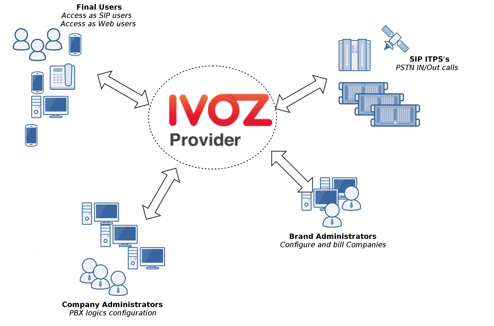SIP signalling flow¶
The first diagram shows the SIP signalling traffic involved in the establishment, modification and termination of sessions following the SIP RFC 3261 and any related RFCs.
These are the external SIP entities involved:
- UACs: users hardphones, softphones, SIP-capable gadget.
- SIP carriers: carriers used to interconnect IvozProvider with external SIP networks (and, probably, with PSTN).
All the SIP traffic (in any of the supported transports: TCP, UDP, TLS, WSS) they send/receive is to/from this two internal SIP entities of IvozProvider:
In fact, users UACs only talks to Users SIP Proxy and ‘SIP carriers’ only talks to Trunks SIP Proxy.
Inside IvozProvider these two proxies talk to Application Servers running Asterisk, but no external element is allowed to talk to Application Servers directly.
RTP audio flow¶
Sessions initiated by SIP signalling protocol imply media streams shared by involved entities.
This media streams use RTP to send and receive the media itself, usually using UDP as a transport protocol.
External entities involved in RTP sessions can be divided in:
- Users.
- Carriers.
Both entities exchanges RTP with the same IvozProvider entity: media-relays.
IvozProvider implements media-relays using both RTPengine and RTPproxy.
Similar to SIP, these media-relays exchanges RTP when is needed with Application Servers, but external entities never talk directly to them.
HTTPS traffic¶
HTTPS is the third traffic type exchanged between IvozProvider and external world.
HTTPS traffic is used for:
Terminal provisioning: several hardphones ask for their configuration when they wake up and this configuration files can be served through HTTPS.
Web portals: IvozProvider has 4-level web portals for all the platform roles.
Both of these traffics are handled by Web portals IvozProvider entity.
Additional elements¶
IvozProvider has multiple elements that are not exposed to the external world but play a crucial task.
The most remarkable profile is database profile that gathers all the information of the platform and shares it between the majority of software packaged. IvozProvider uses MySQL database engine for this task.
Another remarkable task is asychronous tasks handler: CDR must be parsed, calls must be billed, recordings must be encoded, etc.
Auxiliar elements¶
Aux profile runs software that, even though is not vital for calls placing, makes IvozProvider mantainer’s life much more easier.
In fact, without them, debugging problems would be much harder and the quality of given service would be damaged.
IvozProvider ships:
- Homer SIP capture: This amazing software lets us capture all the SIP traffic for later analysis, for obtaining statistics, call quality measuring, etc. Visit SIP Capture website for more information.
- Graylog log viewer: All logs of all IvozProvider profiles are stored and shown with Graylog and divied in brands.
- Grafana graph dashboard: Grafana lets us graph everything. Literally.
Platform roles¶
IvozProvider is a multilevel role provider solution.
The following images shows the different available levels and the relation between them:

This section will explain each of the available roles, describing their responsibilities and more important tasks.
Global administator role¶
The global administator role (operator in the image) is usually done by the installation responsible.
All options and platform features are visible to this role and usually is in charge of its maintenance.
Their most important task is to create Brands and configure them so they have the enough autonomy to properly use the platform:
- Configure their web access.
- Configure their brand portal look and feel: themes, colors, etc.
Appart from their main task, their global visibility and total access makes them responsible of:
Monitor the platform so it keeps always UP & RUNNING
Analyze platform logs to track possible errors.
Polish the security mechanisms to avoid external attacks.
Obtain global statistics of calls audio quality.
Increase the available resources of the platform as long as is needed:
- Increasing resources available in a standalone installation
- Migrating, whenever required, to a distributed installation with multiple AS, media relays, etc.
To sum up, this role is the only one that has no limits within the platform, thats why God is a term used in multiple places along this documentation.
Important
This role is responsible of maintain the platform*, configuring it for the correct behaviour. This role doesn’t have any kind of limit and grants access to the brand operators.
Brand andministator role¶
Brand operator can access a portal with less sections available compared to the previous role. The general (God) administrator is in charge of providing an URL with credentials for its brand portal.
The most important task for brand operator can be managed through this portal: create and configure companies so they can work properly.
Due to brand operators are also resposible of billing their companies and make sure the external cals are properly setup, it must also manage:
- Peering contracts with other IP providers for PSTN interconectivity.
- Include all required company information for the billing process.
- Pricing plans that will offer to their companies, that will determine how match they pay for each call.
- Setup the routes for each outgoing call types based on their final destination
- Create the invoices for each billing period and send them to their clients.
As you can see, the task of brand operator has little in common with the global operator, but their importance is vital so the final users can use all the features includes in IvozProvider
Important
To sum up, the brand operators grant access to the company administrators they serve and configure the platform to route, tarificate and bill their calls.
Company administator role¶
The company administrator has access to the portal supplied by the brand operator.
From its point of view, it has a virtual pbx in the cloud that must configure for its users.
To accomplish that, it’s required:
Configure terminals, extensions and users.
Configure the DDI incoming process with the proper logic:
- Directly to an user
- IVRs
- Hunt groups
- Faxes
Give access to the final users to their web portal, so they can configure their profile options:
- Call forward
- Do not disturb
- Call waiting
Important
To sum up, the company administrators are resposible for configuring the telephony system and make use of all the features available in IvozProvider.
Final user role¶
The final user has two different kinds of credentials, both supplied by its company administator:
- User portal access credetentials
- SIP credentials used to register its terminal (or terminals) to IvozProvider
Through the user portal, it can browse their call registry and configure:
- Call forward
- Do not disturb
- Call waiting
On the other hand, the SIP creadentials allow the users to configure their terminal (or terminals) to place and receive calls.
Note
The same SIP credentials can be used in multiple devices at the same time,generating what is known as parallel-forking: whenever a call is placed to an user, all the active devices will ring so the user can answer the call from any of them.
Important
Final users are the ones that use and enjoy all the feature of IvozProvider
Initial Installation¶
Installation Types¶
Distributed Install¶
IvozProvider software is designed to run distributed between multiple systems in what we call profiles:
Each profile is in charge of performing one of the platform functionalities:
- Data storage
- SIP Proxy
- Application Server
- Web portal
For each of this profiles, there’s a virtual package that will install all the required dependencies (see Installing profile package).
You can install as many instances as you want for each profile, but take into account, that while some of them are designed to scale horizontally (for example: asterisk or media-relays) others will require aditional software so the systems that have the same profile are syncronized (for example: database replication or http request balancing).
StandAlone Install¶
If you want a small installation to make a couple of tests or give a basic service, we have designed all this configuration so they can work in a single machine.
We have called this kind of installations StandAlone and we have also created Automatic ISO CD image so you can install in a couple of minutes.
Minimum requirements¶
System requirements¶
IvozProvider is designed to be installed using Debian GNU/Linux APT package system.
Important
It’s recommended to install IvozProvider in a dedicated server for the platform. Many of the installed software may not work properly with other pre-installed services (like MySQL or DNS servers).
For a StandAlone installation, we recommend at least:
- 4 CPUs (x86_64 or i386)
- 4 Gb memory
- 30GB HDD
- 1/2 public IP Addresses (read note behind)
Note
Since version 1.2 it is possible to make both KamUsers and KamTrunks share a unique public IP address. If so, KamTrunks ports will be changed from 5060 (TCP/UDP) to 7060 (TCP/UDP) and from 5061 (TCP) to 7061 (TCP).
If you’re not using a Automatic ISO CD image you will also need:
- Debian Jessie 8.0 base install
- Internet access
Debian packages install¶
IvozProvider is designed to be installed and updated using Debian packages. More exactly, the current release is ready to be installed on Debian Jessie 8.
It’s recommended to use one of the official installation guides to install the minimum base system. The rest of required dependencies will be installed automatically with IvozProvider meta packages.
No matter if you are installing a StandAlone Install or a Distributed Install, it’s required to configure Irontec debian repositories.
APT Repository configuration¶
Right now, two different repositories are used for the latest IvozProvider release (called oasis) and it’s frontend Klear release (called chloe).
cd /etc/apt/sources.list.d
echo deb http://packages.irontec.com/debian oasis main extra > ivozprovider.list
echo deb http://packages.irontec.com/debian chloe main > klear.list
Optionally, we can add the repository key to check signed packages:
wget http://packages.irontec.com/public.key -q -O - | apt-key add -
Installing profile package¶
Once the repositories are configured, it will be required to select the proper metapackage depending on the type of installation.
- For a StandAlone Install:
- ivozprovider
For a Distributed Install: one of the profile packages depending on the role the machine will perform.
- ivozprovider-profile-data
- ivozprovider-profile-proxy
- ivozprovider-profile-portal
- ivozprovider-profile-as
apt-get update
apt-get install ivozprovider
Finish the installation¶
Distributed installation require a couple manual configuration based on the roles that are performing. Check finishing role configuration for more information.
Standalone installation have a menu that can be used to configure the basic services used in IvozProvider. Most of the services are automatically configured to work in the same machine with the default values.
This menu allows:
- Configure IP address(es) for SIP proxies
- Default platform language
- Administrator MySQL database password
It’s possible to change any of this values anytime by running:
dpkg-reconfigure ivozprovider
Important
Any of the public IP addresses configured during the installation will work to acces the web portal. Default credentials are admin / changeme.
Automatic ISO CD image¶
You can download one of the IvozProvider Automatic ISO CD images (generated using simplecdd) in stable or nighly versions:
Important
IMPORTANT: Automatic install CDs will format target machine disk!
- Configure the target machine to boot from CD. It will display the Debian GNU/Linux installation menu.
Note
You can use graphic installation if you prefer, but the following screenshots show the standard installation.

- Choose installation language:

- Choose location:

- Choose date and time configuration:
Note
At this point, a generic network configuration and disk partitioning will be performed, and also a installation of base system.
- Configure IvozProvider:
As mentioned in Minimum requirements is required at least one public IP address for User and Trunk SIP proxies. Remember that if you use only one, KamTrunks will use different SIP ports to avoid collision.
You can set its addresses right now and configure the interfaces properly when the system is fully installed. This menu can be displayed anytime after the installation.

You can also configure default root MySQL password right now.
Note
If you don’t configure MySQL password, default password will be used (changeme). You can still change it later.

And default language for portals:

Note
It is not require to configure all settings during initial installation. In case any setting has been left without configuration a warning dialog will be displayed.

At last, select where the GRUB boot loader will be installed.

After the reboot, you are ready to access using the web portals!
Important
Any of the public IP addresses configured during the installation will work to acces the web portal. Default credentials are admin / changeme.
Extra components¶
G.729¶
Important
In some countries, you might have to pay royalty fees in order to use G.729 codec to their patent holders. We’re not legal advisors regarding active or withdrawn world patents.
You can use G.729 with IvozProvider, but installation must be done manually. G.729 codec is optimized for each CPU type and version of asterisk, so each installation may require a different codec module.
You can download codec from here under the section Asterisk 13.
Once downloaded, move the .so file to /usr/lib/asterisk/modules/ and rename it to codec_g729.so
You can check the codec is valid by restarting asterisk and printing the available codec translations using:
systemctl restart asterisk # Restart asterisk
asterisk -rx 'core show translation' | grep 729
Making internal calls¶
The goal of this block will be to configure IvozProvider in order to make internal calls, using as the starting point the base installation described in the previous step.
In order to archive a call between Alice and Bob, we have to do some task in the three configuration levels described in Platform roles, and that is why we have ordered the index in this blocks:
Main Management¶
Important
Any of the 2 Public IP addresses configured during the installation will work to acces the web portal. Default credentials are admin / changeme.
In this section will reference global administrator configuration options, avaible in the menu (Main management) of the web portal (only visible to God Admins):

Custom installation configuration¶
During the install process two IP addresses will be requested in order to run the following two processes:
Users SIP Proxy¶
This is the SIP proxy exposed to the external world where users register their terminals.
The value displayed in the section Proxy users will show the IP address entered during the installation process.
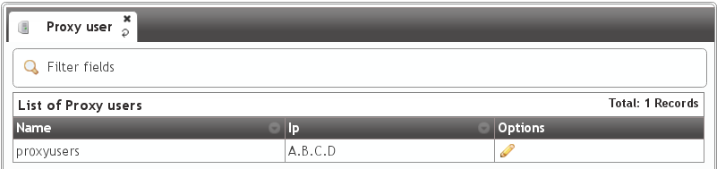Providers SIP proxy¶
This is the SIP proxy exposed to the external world in charge of connecting the provider that brand aministrators will configure for peering.
The value displayed in the section Proxy trunk will show the IP address entered during the installation process.
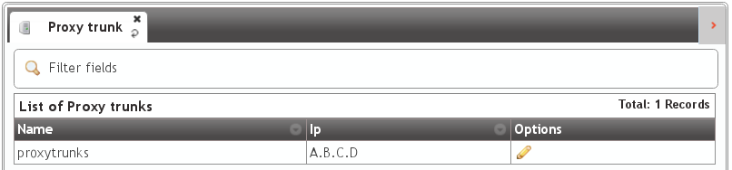Note
Only the IP address will be entered as the port will be always 5060 (5061 for SIP over TLS).
Danger
This 2 values can be changed from the portal, but they must always have the same IP address that proxy process listen to requests.
Standard global configuration¶
The installation process includes other global values that are the same in any standalone IvozProvider installation and can also be checked from the web interface.
Application Servers¶
The section Application Servers will list the IP address where the existing Asterisk processes will listen for request, and like previously mentioned, can scale horizontaly to adapt the platform for the required load.
Contrary to the Proxies, Asterisk is not exposed to the external world, so for a standalone installation there will only be one listening at 127.0.0.1.

Note
The listening port will not be displayed in the field because it will always be 6060 (UDP).
Important
As soon as another Application Server is added, the proxies will try to balance load using it. If no response is received from added Application server, it will be disabled automatically.
Media relay¶
Media relays are in charge of bridging RTP traffic of established calls. Like the Application Servers, they can scale horizontally as much as required.
Media relays are organized in groups so they can be assigned to a company. Each element of the group has a metric that allows non-equal load balancing within the same group (i.e. media-relay1 metric 1; media-relay2 metric 2: the second media relay will handle two times the calls than the first one).
Hint
The static assigment of media relay groups is not the common practice but allow us to assign strategic resources to companies that need a warranted service. The most common usage of this groups of media relays is to place them near the geographic area of the company (usually far from the rest of the platform systems) in order to reduce latencies in their conversations.
In a standalone installation, only one media relay group will be exist:

By default this group only has a media server:
Note
The address displayed is the control socket, not the SDP address that will be included during SIP negociation. By default this alone media-relay will share the same IP address that the User’s SIP proxy.
SIP Domains¶
The section Domains will display the SIP domains that points to our two public IP addresses.
- Users SIP Proxy IP address
- Trunks SIP Proxy IP address
After the initial installation, there will be two domains, one for each address:

This domains will be used internally by a builtin DNS server included in the solution.
Attention
As mentioned in the section Company SIP Domain, each company will require a DNS pointing to the users SIP proxy. Once configured, the domain will be displayed in this list so global administrator can check what domains are registered for each company.
Brands¶
After the initial installation, the platform will have an already created brand called DemoBrand. Let’s inspect its parameters:
- Name
- Sets the name for this brand.
- NIF
- Number used in this brand’s invoices.
- Logo
- Used as default logo in invoices and in portals (if they don’t specify another logo).
- Invoice data
- Data included in invoices created by this brand.
- Mail data
- Display name and from address used in external emails for this brand (faxes, voicemail, etc.)
- SIP domain
- Introduced in 1.4. Domain pointing to Users SIP proxy used by all the Retail Accounts of this brand.
- Recordings
- Configures a limit for the size of recordings of this brand. A notification is sent to configured address when 80% is reached and older recordings are rotated when configured size is reached.
- Features
- Introduced in 1.3, lets god operator choose the features of the created brand. An equivalent configuration is available in Companies, to choose between the ones that god operator gave to your Brand. Related sections are hidden consequently.
Hint
Some features (currently invoices and billing) are related to brand and cannot be assigned to companies. Remaining features are related to companies and lets the brand operator to assign them to its companies.
Warning
Disabling billing hides all related sections and assumes that an external element will set a price for calls (external tarification module is needed, ask for it!).
Note
Disabling invoices hides related sections, assuming you will use an external tool to generate them.
Emulate the Demo brand¶
As mentioned above, the initial installation will have an already created brand called DemoBrand, that will be used for our goal: to have 2 telephones registered that can call each other.
Before going to the next section, is quite important to understand how the emulation works.
- As global operator, you have access to the menu Main management only visible to God administators.
- Apart from that menu, you will also have access to the Brand configuration and Company configuration that will look more or less like this:
- Check following button

- When pressed, a popup will be displayed:

- After selecting the DemoBrand brand, the icon will change and shows the emulted brand:
- The upper right corner of the portal will also display the brand that is being emulted:

What emulation means¶
Basically, that everything in the menu ‘Brand configuration’ will be relative to the chosen brand and is exactly the same menu entries that the brand operator will see using its brand portal.
Tip
Ok, ok. maybe exactly is not totally accurate. The global operator is able to see some fields in some screens that other admins cann’t (i.e. On Company edit screen, fields like ‘Media relays’ or ‘Application server’ are only configurable by the global operator.
Brand Configuration¶
We need that the default DemoBrand have a company with at least 2 users. In order to archive this we will require little configuration in this section.
In fact, if we check Companies in the brand menu, we’ll discover that there is already an existing DemoCompany that we can use to fulfill our desired goal :)

Only a thing is required to configure for this company, marked as edit in the previous image.
Company SIP Domain¶
As mentioned in the previous section, is required that each of the companies have a public domain that resolves to the configured IP address for Users SIP Proxy.
Note
DNS register can be type A (supported by all the hardphones/softphones ) or even NAPTR+SRV.
Once the domain has been configured (by means that are out of scope of this document), it will be enought to write it in our company configuration:

Once the company has been saved, the domain will be also displayed in the list previously mentioned:

Attention
It’s important to understand this block. Unless we’ve a single company registered, wihout a DNS domain pointing to our users proxy IP address, everything will fail.
This is a good sign for the domain we have configured right now, replacing the 10.10.3.10 with the public address we have used to configure Users SIP Proxy.
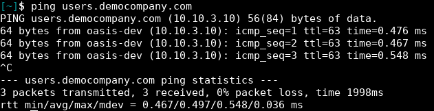Danger
Have we stressed enough that without a properly configured DNS pointing to the Users proxy IP address nothing will work?
I have no time for a DNS registry¶
Everything we have said is true: as we create new brands and brands create new companies, each of them will need a DNS registry.
But the first company of the platform is quite special and can take over the IP address of the proxy to use it as a domain:

Although it is not a domain, but being used like it was, it will be displayed in Domain section:

Tip
It’s important to understand the this trick is only valid for the first company of the platform ;)
Remaining parameters¶
These are remaining relevant parameters configured in Companies section:
- Name
- Sets the name for this company.
- NIF
- Number used in this company’s invoices.
- Invoice data
- Data included in invoices created by this brand.
- Outbound prefix
- Some companies are used to dial an aditional prefix for outgoing calls.
- Outgoing DDI
- Introduced in 1.3, this setting selects a DDI for outgoing calls of this company, if it is no overridden in a lower level (e.g. user level)
- Media relay set
- As mentioned above, media-relay can be grouped in sets to reserve capacities or on a geographical purpose. This section lets you assign them to companies.
- Distribute Method
- ‘Hash based’ distributes calls hashing a parameter that is unique per company/retail, ‘Round robin’ distributes calls equally between AS-es and ‘static’ is used for debugging purposes.
- Application Server
- If ‘static’ distribute method is used, select an application server here.
- Recordings
- Configures a limit for the size of recordings of this company. A notification is sent to configured address when 80% is reached and older recordings are rotated when configured size is reached.
- Features
- Introduced in 1.3, lets brand operator choose the features of the company. Related sections are hidden consequently and the company cannot use them.
Most of the features are self-explanatory, but voice notification deserves an explanation: if you enable them, when a call fails, the user will listen a locution explaining what ocurred (“you have no permissions to place this call”, “the call cannot be billed”, etc.)
Warning
Recordings rotation happens at two levels: brand and company. This means that a company’s recordings can be rotated even though its limit has not arrived (or even it has no limit) if brand’s limit applies first.
Error
Again: recordings rotation happens at two levels: brand and company. This means that a company’s recordings can be rotated even though its limit has not arrived (or even it has no limit) if brand’s limit applies first.
Hint
To avoid this, make sure that the sum of all companies does not exceed the size assigned to your brand and make sure that all companies has a size configured (if 0, it has unlimited size).
Both Distribute method and Application Server are only visible for God Administrator.
Warning
‘Round-robin’ distribute method is reserved for huge companies/retails whose calls cannot be handled in a single AS. Use ‘Hash based’ for remaining ones.
Emulate Demo company¶
The company emulation process is the same as the brand emulation, with the difference that it filters the block ‘Company Configuration’ insted of ‘Brand Configuration’.

Once the company has been emulated, the top right corner of the portal will show that we are in the right path :)
Company Configuration¶
We’re close to make our fist call in our fresh installed IvozProvider, there are only 6 steps to configure in our DemoCompany company.
- 2 terminals
- 2 extensions
- 2 users

Creating Extensions¶
Then we go to extensions, just to check that we have 2 extensions already created for us:
Nothing more to do in this section, let’s go the next one!
Creating Users¶
As expected, we also have 2 created users:

At this point, we have everthing ready make a call between this two users: Alice and Bob.
SIP Terminal configuration¶
The last thing we need is 2 SIP terminals (hardphones, softphones or even mobile applications) and configure them as follows:
ALICE
- User: alice
- Password: alice
- Domain: users.democompany.com (or the IP if we are using the DNS trick)
BOB
- User: bob
- Password: bob
- Domain: users.democompany.com (or the IP if we are using the DNS trick)
Tip
Sometimes the user and domain is configured in a single option. In this case we should enter alice@users.democompany.com and bob@users.democompany.com (or the IP if we are using the DNS trick)
After configuring the terminals, Alices should be able to call Bob only by dialing 102 in her terminal.
Receive external calls¶
The goal of this block will be configure IvozProvider to receive incoming external calls.
In order tho archive this, this steps will be followed:
Numeric transformations¶
Concept¶
IvozProvider is designed to provide service anywhere in the planet, not only the original country where the platform is installed.
A very important contept to archive this goal is the numeric transformation, that adapts the different number format systems of the countries of the world defined in E.164 to a neutral format.
The section that allows the brand operator to configure all the numeric transformations is:
There are two different transformation scenarios:
Incoming transformations¶
When a new call is received in IvozProvider matching a provider that has been configured for peering, we must adapt the numbers that make reference to:
- Origin of the call
- Destination of the call
Depending on the country of the provider, the international numbers will have a format or another. In this case, the spanish provider will use, for example:
- 00 + 33 + number belonging to France
- It’s possible that the international numbers came without the 00 code.
- It’s possible that, if the call comes from the same country that the provider, the number comes without the calling code (911234567 insted of 00 + 34 + 911234567 for Spain).
For an Ukranian provider, that doesn’t use the 00 as international code:
- It will use 810 + 33 + number belonging to France.
- It’s possible that even part of the internation code (00 in most of the countries of the world) the provider use specific codes as prefix.
The goal of the incoming transformation is that, no matter what numeric system the provider uses, the number will end in a general and common format.
Important
This common format is usually called E.164 and shows the numbers without internation code, but with country calling code: i.e. 34911234567
Outgoing transformations¶
In the same whay the origin and destination must adaptat incoming numbers, it will be required to adapt outgoing dialed numbers to properly work with each of the providers that will route our call.
For example, for a number with spanish number system:
- Spanish provider: Destination will come in E164 (34911234567) and for this provider, we can remove the calling code (will understand it belongs to its country), so the number sent to them will be 911234567.
- French provider: The destination will come in E164 (34911234567) and we must add the international code for France, so the number sent to them will be 0034911234567.
Note
To sum up, we aim to send the origin and destination in the format the provider is expecting.
Tip
Numeric transformation uses simple regular expresions to describe the changes done to the numbers. You can find multiple tutorials on net with the basic regular expression format.
‘National provider’ transformations¶
IvozProvider comes with an automatic transformation rules generator that fits with most of the countries.
In order to create a new set of transformations for spanish provider:

The rules that has been auto-created will transform the numbers for spanish providers that follow this rules:
- A spanish number: Neither international nor calling code (34).
- Not a spanish number: International code (00) and calling code (34).
The numeric transformation sets must be assigned to Peering Contracts, as shown in the following section. This set can be shared by multiple spanish providers.
Let’s check this set to understand what transformation rule does:
Attention
The automatic rule generation will create 8 common rules based on the given parameters. This rules can be edited later to match the provider requirements.
Spanish incoming transformation¶
Displayed in blue in the previous image:
- Left called/destination
- Right callee/origin
The same rules will be applied for the origin and destination:
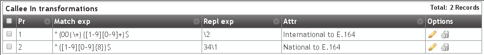The metric field will be used to order the rules (smaller first).
- If a rule doesnt match, the next rule is evaluated.
- If a rule matches, no more rules are evaluated.
- If no rule matches, no change is applied.
The Search field is evaluated agains the number (depending of the tranformation type it will be destination or origin).
- Metric 1: Starting with (^) 00 or ‘+’, followed by a digit between 1 and 9 and only digits between 0 and 9 until the end ($).
- Metric 2: Starting with a digit bewteen 1 and 9, followed by eight digits between 0 and 9 until the end($).
The Replace field will use the capture groups that matched the Search field (displayed between brackets, 1 for the first one, 2 for the second one, and so on) to determine how the number will end.
- Metric 1: The number will be converted just to the second capture (2)
- Metric 2: The number will be converted to the first capture with 34 prefix
Or in other words:
- Metric 1: Strip the international code (00 or ‘+’)
- Metric 2: Add 34 to spanish numbers that comes without calling code.
Spanish outgoing transformation¶

Following the same logic, this 2 rules make the change of the outgoig external destination numbers:
- Metric 1: If the number starts with 34 prefix, remove it. This converts E.164 spanish numbers to national format.
- Metric 2: If the number doesn’t start with 34 prefix, add 00. This converts E.164 international numbers to spanish international numbers.
Attention
To sum up: numeric tranformation can adapt origin and destination numbers to E.164 for the platform, and to providers expected formats, based on regular expresions and metric that can be grouped in sets to be shared between multiple Peering Contracts.
Configuring a Peering Contract¶
We understand a Peering contract the agreeming between a Brand Operator and a VoIP Provider to make and receive calls.
IvozProvider is ready to integrate with IP providers created on the secteion Perring contracts:

Peering contract Basic data¶
These are the basic information of a Peering contract:
If we edit it, well see something like this:

- Name
- Used to reference this Peering contract.
- Description
- Optional field with any required extra information.
- Numeric Transformation
- Transformation that will be applied to the origin and destination of the incoming and outgoing numbers that use this Peering contact (see Numeric transformations).
- External tarification
- This setting requires the external tarification module and allows tarification on special numbers. This module is not standard so don’t hesitate in contact us if you are interested.
Important
Fields marked with a red start are mandatory.
Peer Servers¶
A Peer Server is a SIP server associated to an IP Provider. In order to add some Peer Servers for the Peer Contract that have just created, we only have to use the following section:
As displayed by the zero counter, no Peer Serve has been created yet:

- Name
- Used to identify this Peer Server
- Description
- Optional field with any required extra information.
- SIP Proxy
- IP address (or DNS registry) of the Peer Server. You can also specify a port if it’s different from 5060.
- URI Scheme
- Supported schemes are sip and sips. Use ‘sip’ in case of doubt.
- Transport
- Supported transport protocols. Use ‘udp’ in case of doubt.
- Outbound Proxy
- Usually this is left empty. It can be filled with the IP address of the SIP Proxy domain (to avoid DNS resolution, but keeping the domain in the SIP messages). It works like a web proxy: instead of sending the SIP messages to destination SIP Proxy, they will be sent to the IP:PORT of this field.
- Requires Authentication
- Some Peering contracts validate our platform by IP, others require each session that we want to establish. For this last case, this section allows to configure user and password for this authentication.
- Call Origin Header
- Some Providers get origin from SIP From header. Others use the From header for accounting and need extra headers to identify the origin. In case of doubt leave PAI checked.
- R-URI Transformations before numeric transformations
- This setting allow static changes to the destination of the calls before applying numeric transformation rules mentioned in Numeric transformations. Some digits can be stripped from the begining, add a prefix, or even, add extra parameters to the URI followinging the given format. In case of doubt, leave empty.
- From header customization
- For those providers that show origin in other headers (PAI/RPID), it is possible that request that From User have the account code being used and from domain their SIP domain. In case of doubt, leave empty.
Tip
There are many fields to establish peering with multiple kind of providers, but usually with the name and SIP Proxy will be enough (for those that validate our platform by IP) and Authentication (for those that won’t).
Warning
In case of defining multiple Peering Servers for a single Peering Contract, IvozProvider will balance and failover using all of them. Like with Application Servers, it will disable those who doesn’t respond to our requests.
SIP Register¶
Some providerss require a SIP Register active in order to receive incoming calls to our DDIs. Some of them, even require this register in order to process our outgoing calls through their services.
Note
IvozProvider supports any kind of peering, but we highly recomend peer to peer peerings: without authentication, without registry and validated by IP. This will avoid unnecessary traffic (authentication in each session and preriodic registers) and simplifies its configuration, just by leaving most of the fields by default.
For this reason, IvozProvider allows periodic SIP register configuration in the following section:

If we create a new one, the following screen will be displayed:
- Username
- Account number or similar provider by the provider that requires SIP register.
- Domain
- Domain or IP of the registar server. Usually the same as the SIP proxy of the Peer server.
- DDI
- This will be sent in the SIP Contact header and must be unique in all the platform. For Peering contracts with an associated DDI, it is recommended to enter that DDI. In case of multiples DDI for the same Peering Contract, use any of them. If no DDI is associated with this Peering Contract just enter an unique numeric value.
- User
- Authentication user. Most of the time it’s the same as username, so it’s recommended to leave empty.
- Register server URI
- Usually this can be left empty, as it can be obtained from the Domain. If it is not the case, enter the IP address with the ‘sip:’ prefix.
- Realm
- Leave empty to accept the authentication realm proposed by the provider. Define only if you are familiar to the authentication mechanism used in SIP.
- Expire
- Default suggested register expire time.
Tip
Similar to the Peer Servers, there are lots of fields in the screen. You must have into account that most of the provider doesn’t require register , and those who does, will only use user, domain and password.
Once we have an agreement with a VoIP provider and we have configured it in the peering section, only two task are pending:
Configuring an external DDI¶
The brand operator, responsible of this peering agreements with VoIP providers , has the task to create the DDIs for each provider.
To accomplish this, following section can be used:
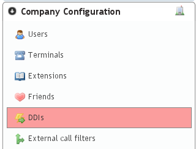Notice that in order to access this section, the brand operator (or god) must have emulated the proper company and access the menu section Company Configuration.
Attention
Section Company configuration > DDIs is different when the company administrator access than the displayed data when a global or brand administrator does. Company administrator are unable to create or delete DDIs, just edit the one created by the brand or god administrator.
The section Brand configuration > DDIs is a read-only display of all the DDIs of the brand, associated with the different companies.
Taking into account this concepts, we create a new DDI and fill the required fields:
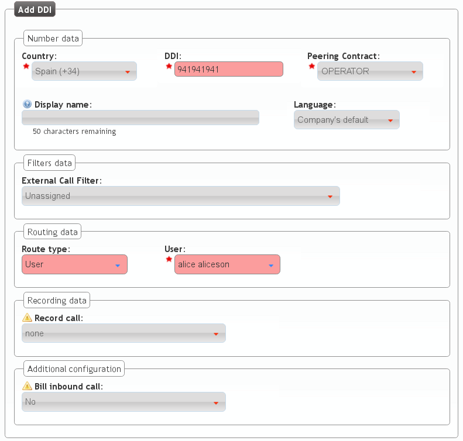- Country
- The country of the new created DDI. Used for E164 standarization.
- DDI
- The number, without country code.
- Peering contract
- The peering contract that provides this number. This relation allow the platform to apply the required Numeric transformations in order to determine its standard form.
- External Call Filter
- Allows configuration based on Calendars and Schedulers as shown in External Call filters. Leave empty if you don’t need to apply any kind of filter.
- Route
- A DDI can have different treatments. For our current goul, set route to user and select Alice.
- Record calls
- Can be used to record external calls (see Call recording).
- Tarificate incoming calls
- This setting requires the external tarification module and allows tarification on special numbers. This module is not standard so don’t hesitate in contact us if you are interested.
Configure incoming routes¶
In the previous section, we have created the DDI and configure it, but the most common procedure is that the brand operator just create it while the company administator, using the same saction will configure it choosing the correct route (user, huntgroup, etc.), its filters with calendars and so on.
Note
At this point, calling the number of the configured DDI will make the Alice phone ring.
Making external calls¶
The goal of this section is configuring IvozProvider to make external outgoing calls, taking previous section configuration as a starting point.
We will follow this steps:
Where do I call?¶
At this point of the configuration, we have to configure IvozProvider to use the already configured Contract Peering to place the external calls we are making.
To achieve this, in first place, we need that the dialed external numbers fall in an existing target pattern.
Target patterns¶
When a user dials an external phone number, IvozProvider tries to categorize this call into a one of the target patterns defined in this section:
Usually, it will we useful to have one target pattern for the 254 countries defined in the ISO 3166. That’s why IvozProvider automatically includes all this countries and their prefixes:
Within this list we can find Spain’s prefix, that will be the prefix of the test call we are going to make in this section:
Warning
Brand operator can choose between keeping this target pattern if finds them useful or deleting them an creating the ones that meet his needs. In fact, apart from phone prefixes it is also possible to use regular expressions. e.g. Unique target pattern that contains all possible targets: ^[0-9]+$
Danger
Notice that using regular expressions instead of prefixes can make a phone number to match more than one target pattern. Use with responsibility.
Target pattern groups¶
As we will see in rutas salientes section, every target pattern will be linked to a Peering Contract.
That’s why it can be useful to group the target patterns in target pattern group so that we can link a whole group to a Peering Contract more easily.
This is the goal of this section:
By default we can see the 254 countries grouped in the continents defined in ISO 3166:

Important
To sum up, when a user dials an external number, IvozProvider looks up a matching target pattern to decide which PeeringContract must be used to place this call.
To achive our goal of making an external call to a spanish number, we didn’t have to modify the initial contents of this two sections :)
We already have our test call categorized as a call within the Target pattern ‘Spain’. In addition, we also have a Target pattern group including ‘Spain’, called ‘Europe’.
Now we have to tell IvozProvider that calls to ‘Spain’ or ‘Europe’ should be established through our Contract Peering.
Outgoing Routing¶
To make this assignment, we use the section Outgoing routing:
If we choose routing ‘Spain’ calls only through our Peering contract, we will make this configuration:
On the other hand, if we are more generous and we decide to place calls to all european countries, we would make this configuration:
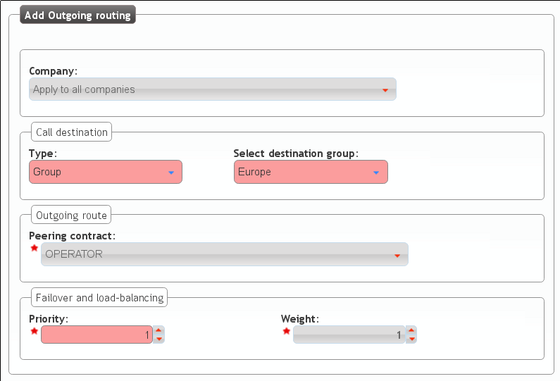Two parameters deserve an explanation in this section:
- Priority
- If a call matches several routes, it will be placed using the outgoing route with lower priority, as long as it is available.
- Metric
- If a call matches several routes with equal priority, metric will determine the proportion of calls that will use one route or another.
Note
This are the key parameters to achieve two interesting features: load-balancing and failover-routes.
Load balancing¶
Load-balancing lets us distribute calls matching the same pattern using several valid outgoing routes.
Example 1
- Route A: priority 1, metric 1
- Route B: priority 1, metric 1
Call matching these routes will use route A for %50 of the calls and route B for %50 of the calls.
Example 2
- Route A: priority 1, metric 1
- Route B: priority 1, metric 2
Call matching these routes will use route A for %33 of the calls and route B for %66 of the calls.
Failover routes¶
Failover route lets us use another route whenever the main route fails.
Example
- Route A: priority 1, metric 1
- Route B: priority 2, metric 1
All calls matching these routes will try to use route A. In case the call fails, the call will be placed using route B.
Tip
Although given examples use two routes, more routes can be chained and failover and load-balancing estrategies can be combined.
Outgoing DDI configuration¶
Before placing our first outgoing call, it would be desirable to choose the number that the callee will see when the phone rings, so that he can return the call easily.
To achieve this goal, we have to configure our DDI as Alice’s outbound DDI, because she will be the chosen one to place our first outgoing call:
We can set this up editing Alice in Company Configuration > Users. If this change is made by brand operator or global operator, he must emulate the corresponding company previously.
Warning
Calls from users without an outgoing DDI will be rejected by IvozProvider.
At this point, we are looking forward to make our first outgoing call with our new IvozProvider, we may have even tried to call with current configuration but...
No pricing plan, no call¶
Just the way we warned when we described the duties of the brand operator, the brand operator is responsible for making all the needed setup so that IvozProvider is able to bill all external calls.
Note
Billing a call is the action of assigning price to a call that implies cost.
IvozProvider checks live that a call can be billed when it is established to avoid placing calls that imply cost but won’t be billed because Brand Operator, due to a mistake, hasn’t assigned a price.
Error
If a call can’t be billed, IvozProvider won’t allow its establishment.
Creating a pricing pattern¶
Just the way target patterns exist, pricing patterns exist and are configured in this section:
Important
A call is considered billable if there is a pricing pattern that matches this call.
Pricing patterns section is empty by default, as opposed to target patterns section, that has all the 254 countries of the world. The reason is that pricing pattern will usually imply lots of pattern per country (GSM networks, especial numbers, mobile numbers, fixed lines, etc.).
We will create the pricing plan ‘Spain’ for our outgoing call:

Creating a pricing plan¶
A Pricing plan determines the price of a type of call (of a pricing pattern) and is configured in this section:
We create a pricing plan for our goal:

And we add the pricing patter we have just created:
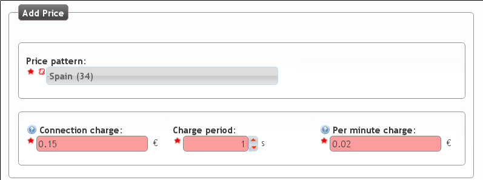Note
Floating number must use the ”.” as decimal separator (e.g. 0.02)
Finding a pricing plan for a specific destination
To check the configuration so far we can find a pricing plan for a call pressing:
We introduce the destination number in E.164 format:

And we can check that it matches the precing plan we have just created:

Assigning a pricing plan to a company¶
A specific pricing plan can be linked to ‘n’ companies and the brand operator is responsible for this task.
In the section Brand configuration > Companies we select the demo company:

The Pricing plan and Companies relationship is set for a determined period of time, that’s why we have to select Start time and End time:

The metric of the link lets you assign more than one pricing plan for a company, even though some destinations are included in more than one of those pricing plans.
Attention
If a given call can be billed with more than one active pricing plan, it will be billed using the pricing plan with lower metric.
Tip
This allows having a general Pricing plan and concrete the price of a specific destination in another pricing plan with lower metric (free cell phone calls, for example).
Simulating a call of a specific company
We can simulate a call for a given company and check the price it will imply. This way, we can be sure that the configuration is ok and that calls to that destination will be billed using a specific Pricing plan:

We introduce the destination number in E.164 format:
And we confirm that it will be billed with the pricing plan that we have just created and linked:
Note
At this point, Alice should be able to make outgoing calls to spanish destinations and this calls should be billed accordingly.
PBX Features¶
In the previous block we have successfully make internal and external calls with just a minimum configuration, based on the base data left by the installer itself and ignoring a lot of the sections and features.
The goal of this section will be describe each one of those features that are also included in IvozProvider.
Extensions¶
The base configuration includes 2 extensions (101 and 102) that route directly to Alice and Bob, so we had almost nothing to do with the section Company configuration > Extensions.
Note
An extensions is, by definition, an internal number with an assigned logic.
Create a new extension
The new extension window looks like this:
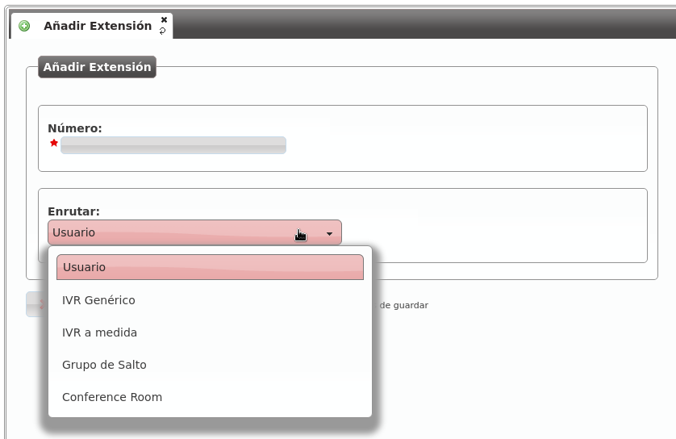- Number
- The number that must be dialed by the internal user that will trigger the configured logic. It must have a minimum length of 2 and must be a number.
- Route
- This select will allow us to choose the logic that will use this extension when is dialed from an internal user. Depending on the selected route, and additional select or input will be shown to select the hungroup, conference room, user, etc.
Warning
If an extension has a number that conflicts with an external number, this external number will be masked and, in practice, will be unavailable for the whole company.
Terminals configuration¶
The section Company configuration > Terminals allows creating new SIP credentials that can be used by multiple SIP devices to place and receive calls from IvozProvider.
The best way to understand this section is creating a new item and see the fields that must be filled.

- Name
- Username that will use the terminal during the SIP authentication phase with IvozProvider.
- Password
- Password that will use the terminal to answer the SIP authentication challenge. You can use the automatic password generator to fullfill the secure password requirements.
- Allowed/Disallowed codecs
- Determines what audio and video codecs will be used with the terminal.
- CallerID update method
- Choose the SIP method the terminal prefers to received the session update information: INVITE or UPDATE. The help hint can be used as guide to configure different terminal manufacturers. Use INVITE in case of doubt.
- Terminal model
- Determines the provisioning type that will receive this terminal. The section terminal provisioning will explain in depth the different models for automatic provision. If your device does not require provisioning, just select Generic.
- MAC
- Optional field that is only required if you plan to use IvozProvider terminal provisioning. This is the phisical address of the network adapter of the SIP device.
Note
For most of devices that doesn’t require provisioning just filling username and password will be enough.
Hint
Once the terminal has been created, most devices will only require the name, password and Company SIP domain in order to place calls.
Call ACL Control¶
The Call ACLs determines what users can call to external numbers.
Attention
The internal extensions are allowed to all users, the Call ACLs only apply to external numbers
The Call ACL setup has two different parts:
Classify the call in different types based on regular expressions:
- Brand level: Brand Configuration > Generic call ACL patterns
- Company level: Company Configuration > Call ACL patterns
Choose policies for groups of patterns: Company Configuration > Call ACLs
Call ACL patterns¶
The destination number is matched against the Company ACL patterns to determine the destination type.
Note
When a Brand operator creates a new company, all of the Generic ACL patterns defined in the Brand configuration are copied to the Company configuration > Call ACLs. This way, the brand operator can define the most common patterns to speed up the company configuration.
The patterns creation process is quite simple:
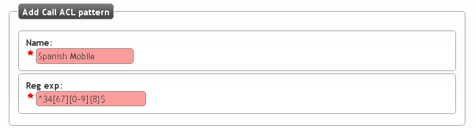This new ACL pattern includes the calls starting with the spanish country prefix followed by 6 or 7 and 8 more digits between 0 and 9. This is the E.164 format for the spanish mobile numbers.
Following this spanish example, other formats will be:
- Spanish Landline (including special numbers prefix: 902, etc.): ^34[89][0-9]{8}$
- 34 (Spain country prefix), 8 or 9 followed by 8 digits
- Spanish Landline (excluding special number prefix: 902, etc.): ^34[89][1-9][0-9]{7}$
- 34 (Spain country prefix), 8 or 9, followed by one digit between 1 and 9, followed by 7 digits.
- United Kingdom Landline: ^44[0-9]+$
- 44 (UK country prefix), followed by more digits
External numbers format
Attention
Regular expressions of Call ACL patterns must be in E.164 format.
There are two main reasons for this decision:
- The same pattern will apply to all the users of the company, no matter what country the user is.
- Brand-level ACL patterns will be inherited by all new companies. The only way this inheritance could be useful was using an standard format, valid for all the companies countries.
Besides, this way it is really easy to avoid (or allow) call to a country.
Call ACL¶
The Call ACL configuration is easier to explain with an example:
Imagine the following CALL ACL patterns:

We could create a Call ACL that only allow calling to this destinations:

Note
The default action determines what to do with the call when the destination number does not match any ACL patterns.
After creating the Call ACL we can edit it to add the required rules:

- The metric determines the evaulation order of the rules and the action that
- that will be applied if it matches the pattern (allow/deny).

Once we have added our two spanish Call ACL patterns, our Call ACL will look like this:
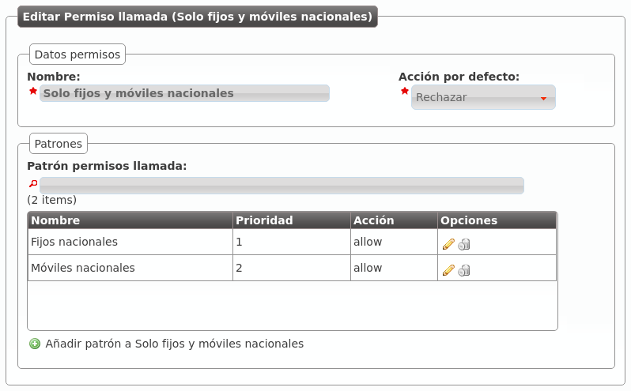We only have to assign this ACL to the users in the section Company configuration > Users:

From this moment on, Alice will only be allowed to call internal extensions (they are always allowed) and spanish numbers.
Users configuration¶
The installation process creates Alice and Bob users, allowing us to test internals calls between them without too much effort.
We skipped most of the settings in Users configuration that we will described in this section.
Personal data¶

- Name
- Used to identify this user in most of the screens. This is also the name that will be displayed in internal calls made from this user.
- Lastname
- Most of the times this is used to complete the previous field.
- Email used to send the user’s received voicemails. This is also used to identify the user in their portal.
- Country code / Area code
- Defines the way the user calls and the way the numbers are presented to this user.
- Language
- When a locution is played to this user, this language is used.
- Timezone
- User portal call list times will use this timezone.
Login Info¶

- Active
- Allows administrators to grant or disable user’s acces to the user’s portal.
- Password
- Password used to access the user’s portal.
- QR Code
- If enabled, a QR code for Grandstream Wave softphone configuration will be shown.
Basic Configuration¶

- Terminal
- The available terminals created in Terminals configuration are listed here for assignment.
- Screen Extension
- One of the available Extensions that this user will display when placing internal calls. While multiple extensions can be routed to the user, only one of them will be presented when the user calls.
- Outgoing DDI
- As described in Outgoing DDI configuration, determines the number that will present when placing external outgoing calls.
- Outgoing DDI Rules
- Manages exceptions to previous setting. Read Outgoing DDI Rules for further reference.
- Call ACL
- One of the created Call ACL groups, described it the previous sections.
- Do not disturb
- When this setting is enabled, the user won’t receive any call but can still place calls.
- Max Calls
- Limits the number of received calls if the user is handling simultaneously (inbound and outbound) more than the number set. Set 0 for unlimited calls.
- Calls from non-granted IPs:
- Enable calling from non-granted IP addresses for this user. It limits the number of outgoing calls to avoid toll-fraud. ‘None’ value makes outgoing calls unlimited as long as company IP policy is fulfilled. Read Roadwarrior users for further reference.
Voicemail¶

- VoiceMail enabled
- Enables or disables the existance of a users voicemail. This only makes the voicemail available to be routed as described in the section forward to voicemail.
- Voicemail Locution
- If set, this locution is played as voicemail welcome message when a voicemail for this user is going to be recorded. This only applies for call forwardings to voicemail described in the section forward to voicemail.
- Email notification
- Send an email to the configured user address when a new voicemail is received.
- Attach sounds:
- Attach the audio message to the sent email.
Note
If voicemail locution is not assigned, default locution will be used as long as the user has not recorded a custom message through the voicemail menu (calling to voicemail service code).
Boss-Assistant¶

This feature will turn the user into a boss that can only be directly call by:
- The selected assistant.
- Any origin that matches the white list.
The rest of the calls to a bos will be redirected to the assistant.
- Is boss
- Determines if this user is a boss.
- Assistant
- Who will receive the redirected calls of this boss.
- Whitelist
- Match Lists with origins that are allowed to call directly to the boss.
With the setup in the image, every call to Alice will be redirected to Bob, except the ones placed by Bob itself and those coming from any origin that matches Alice’s friends matchlist.
Group Configuration¶

As described in the sections Hunt groups and Call pickup, the user can be part of one or more huntgroups and pickup groups.
Those groups can be configured from the sections Hunt groups and Call pickup or the user’s screen if the groups already exists.
You can also configure the user’s hunt groups from the icon in each user line of the users list.

User Call Forward¶
The user’s call forward can be configured in the following button:

These are the fields and available values:
- Enabled
- Determines if the forward must be applied or not. This way, you can have most used call forward configured and toggle if they apply or not.
- Call Type
- Determines if the forward must be applied to external, internal or any type of call.
- Forward type
When this forward must be applied:
- Inconditional: always
- No answer: when the call is not answered in X seconds
- Busy: When the user is talking to someone (and call waiting is disabled), when Do not disturb is enabled or when the user rejects an incoming call.
- Not registered: when the user SIP terminal is not registered against IvozProvider.
- Target type
What route will use the forwarded call.
- VoiceMail
- Number (external)
- Extension (internal)
Hint
If we want to forward to other process, we can create an extension routed to that object and use the target type Extension.
Friends¶
Friends section in the Company configuration allows interconnection of IvozProvider with other SIP PBX systems through a SIP trunk. The most typical use case is when a company have multiple PBX systems that want to integrate in a single flow.
Warning
It’s important to understand the difference between Contract peering defined by the brand operator to connect with the public network and Friends, defined by company administrators to connect the system with other PBXs.
What does this allow?¶
This sections allows not just communication between users at boths ends of the SIP trunk, but also:
- Users “from the other side” can call to the public network just like native Ivozprovider Users.
- Public network calls can be routed to the other SIP trunk end.
Types of friends¶
There are 2 main types of SIP PBX that can be integrate with IvozProvider:
- Direct connection PBX: IvozProvider must be able to talk SIP directly with this kind of friends by just redirecting the traffic to the proper port of the public IP address of the PBX.
- PBX behind NAT: Not directly accesible. This kind of PBX must register at IvozProvider (just like all the Terminals do).
What kind of calls can be routed through a friend?¶
IvozProvider must know what calls must be routed to the different defined friends. For that, company administrator will configure regular expressions that describe the numbers that can be reached through the friend.
Note
Internal extensions have priority over any expression defined in the friends.
To sum up, IvozProvider will route a call received by a user or a friend following this logic:
- Destination matches an existing IvozProvider extension?
- If not: Destination matches any friend regular expression?
- If not: This is an external call.
Configuration¶
The Friend configuration is a merge between a User and a Terminal
Hint
Friends are so similar to Users that both talk SIP with the Users SIP Proxy.
This are the configurable settings of friends:
- Name
- Name of the friend, like in Terminals. This will also be used in SIP messanges (sent From User).
- Description
- Optional. Extra information for this friend.
- Priority
- Used to solve conflicts while routing calls through friends. If a call destination matches more than one friend regular expresion the call will be routed through the friend with less priority value.
- Password
- When the friend send requests, IvozProvider will authenticate it using this password. Like in terminals using password IS A MUST.
- Direct connection
- If you choose ‘Yes’ here, you’ll have to fill the protocol, address and port where this friend can be contacted.
- Call ACL
- Similar to internal users, friends can place internal company calls without restriction (including Extension or other Friends). When calling to external numbers, this ACL will be checked if set.
- Fallback Outgoing DDI
- External calls from this friend will be presented with this DDI, unless the source presented by friend is a DDI that exists in DDIs section.
- Country and Area code
- Used for number transformation from and to this friend.
- Allowed codecs
- Like a terminal, friends will talk the selected codec.
- From domain
- Request from IvozProvider to this friend will include this domain in the From header.
Note
Calls to friends are considered internal. That means that ACLs won’t be checked when calling a friend, no matter if the origin of the call is a user or another friend.
Asterisk as a friend¶
At the other end of a friend can be any kind of SIP entity. This section takes as example an Asterisk PBX system using SIP channel driver that wants to connect to IvozProvider.
register¶
If the system can not be directly access, Asterisk will have to register in the platform (like a terminal will do).
Configuration will be something like this:
register => friend-name:friend-password@ivozprovider-company.sip-domain.com
peer¶
[nombre-friend]
type=peer
host=ivozprovider-company.sip-domain.com
context=XXXXXX
disallow=all
allow=alaw
defaultuser=friend-name
secret=friend-password
fromdomain=ivozprovider-company.sip-domain.com
insecure=port,invite
Warning
Friends, like terminals, MUST NOT challenge IvozProvider. That’s why the insecure setting is used here.
Summary¶
The key point is understanding that a friend has a direct relation with the extension-user-terminal trio:
- Can place calls to all internal extensions and other friends.
- Can place external calls that its ACL allows
- Display their configured outgoing DDI when calling to external entities
- Never challenge IvozProvider requests (don’t request authentication on received requests)
- Answers IvozProvider authentication challenges (All request from them to IvozProvider must be autheticated for security reasons)
- Only connects with Users SIP Proxy, like terminals. In fact, SIP traffic from friends are identical to any other user terminal traffic in format.
Music on Hold¶
The music on hold will be played when the user holds the call and the other member waits until the call is resumed.
IvozProvider can be configured at two levels what music will be played:
- At brand level: Brand Configuration > Generic Music on Hold
- At company level: Company Configuration > Music on Hold
If a company has defined a music on hold, it will be played. Otherwise, the one defined by the brand administrator. If none of this is configured, a global music will be played.
Note
Multiple files can be added to be played as Music on Hold. The system will choose them randomly for each call.
Add a new music on hold
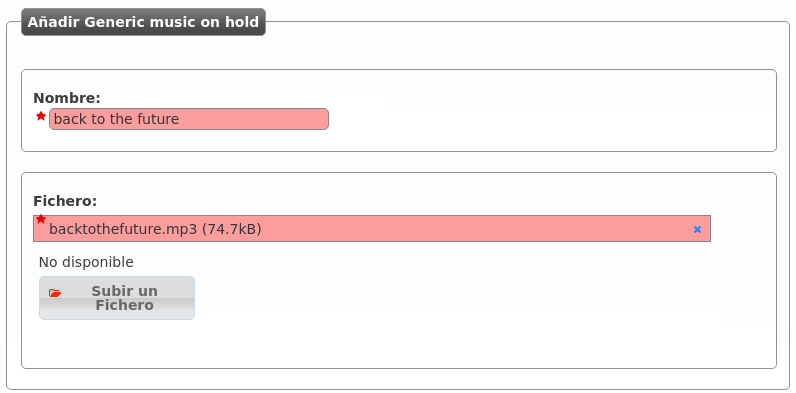Once the music has been encoded the Status fill will display ready and the music will be used for the next calls.
Tip
IvozProvider supports most of the common audio formats and encodes them to the optimal format for the platform.
After the encoding, we can download both the original and the converted version in the edit screen.

Locutions¶
The locutions of the platform are created and uploaded just like the files of Music on Hold.
The section Company configuration > Locutions allows the company admin to choose the sounds that will be played in many configuration places (IVR, etc) accross the platform.
Attention
Locutions can be recorded from any terminal by dialing the Recording extension displayed in their edit screen.
Hint
The main difference between a locution and music on hold is that the administrator chooses when the first one will be played (out of schedule, IVRs, and so on) and the second one will be played when a call is holded by an user.
Outgoing DDI Rules¶
Most calling entities in IvozProvider require an outgoing DDI when placing calls to external numbers. This includes: Users, Friends, Faxes, Retail Accounts, and so on..
But there are some cases when a single outgoing DDI is not enough, and the presented DDI depends on the called number. To archive this dynamic outgoing DDI selection you can use Outgoing DDI rules.
Before creating a new rule, it would be required to frist group the destination numbers in Match Lists.
For this example, we will create a match list of corporative mobiles with all the mobile numbers of our company workers. When we call to those numbers, we will keep the original outgoing DDI assigned to the user, and for the rest of the cases we will force the DDI to the main company outgoing DDI.
Create a new Outgoing DDI Rule
The main creation screen defines the action that will take place when no rule matches the dialed destination, so we define to force the main company DDI here.
Assign rule lists actions
Now we add a new rule that will match our mobiles to make the user’s outgoing DDI be kept uptouched.
Assign rule to callers
At last, we have to configure who will use this rule to dynamically change it’s presentation number. We can do this in the Company’s edit screen or the Users’s edit screen.
In this case, the User will present 777777777 DDI when calling Coporative mobiles and 666666666 when calling the rest of the external numbers.
Attention
Current implementation of Outgoing DDI rules won’t work for diverted calls (out of schedule, holidays or user’s call forward settings).
External Call filters¶
One of the most common task a company’s administrator will do is to configure schedules and calendards to apply to existing External DDIs.
The first step is creating a schedule.
Schedules¶
The section Company configuration > Schedule allows to configure different time gaps when an external DDI will be available.
The screen displayed to the company administrator looks like this:
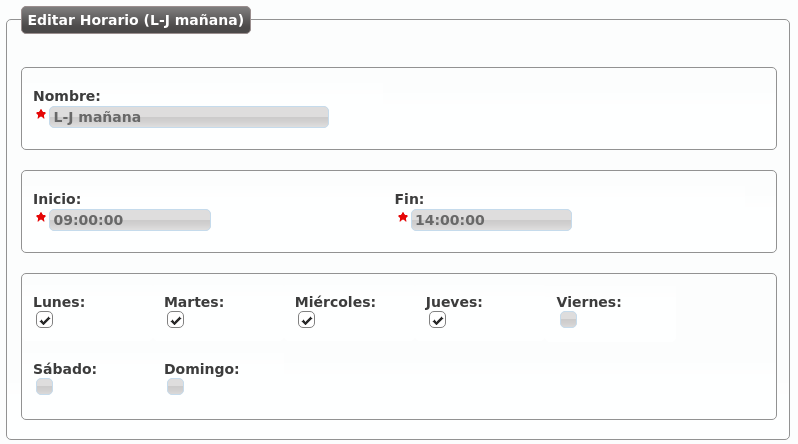With the above configuration, we have defined a morining schedule that will be applied from Monday to Thursday.
We can also define an afternoon schedule for Monday to Thursday too:

And apply a different time gap for the Fridays:

We have the following time gaps that combined will determine our company office schedule.

Warning
The schedule will be defined by combining the active time gaps: Any time outside this grouped gaps will be considered out-of-schedule.
Calendars¶
Calenders are used to define what days are considered as holiday. Like schedules, multiples calendars can be combined.
Let’s imagine three calendars with the following configuration:

Calendar creation process only requires a name. Once created, we can add what days will be holidays using the buttons in its row:

From this moment on, the calendar has the 1st of January of 2016 as holiday date with the locution “Happy New Year”.
Warning
Calendars logic is opposite to Schedulers: If a day is not defined as holiday in any of the calendars, it will considered a normal day and no filtering will be applied.
Hint
Holidays without special locutions will apply the external call filter holiday generic locution (see below).
Create a new External call filter
Once we have our new created schedules and calendars, it’s time to apply them in what we call External call filter.
The company admin can configure them in the following screen:

- Name
- Descriptive name that will reference this filter in DDIs configuration.
- Welcome locution
- This locution will be played if the call is not going to be forwarded by out of schedule or holiday filtering (in other words if the normal routing of the DDI is going to be applied).
- Black list
- External origin will be checked against the associated Match Lists, if a coincidence is found, the call will be rejected immediately.
- White list
- External origin will be checked against the associated Match Lists, if a coincidence is found, the call will be directly routed to the DDI destination, skipping the filter process. Take into account that black listed are checked before white lists.
- Holiday locution
- The locution will be played when the day is maked as holiday in any of the calendars associated with the filter if the calendar entry has no locution for that day.
- Holiday forward type
- After playing the above locution (if configured), call can be forwarded to a voicemail, external number or internal extension. For example, the filter of the image will redirect calls during holidays to the external number 676 676 676.
- Out of schedule locution
- The locution will be played when, not being holiday, the current time is not in any of the time gaps defined in the schedules assigned to the filter.
- Out of schedule forward type
- Like in the holidays forward, but for out of schedule. The image above won’t apply any forward (and the call will be hanguped).
- Calendars
- One or more calendars can be associated with the filter. The combination of all the callendars will be applied.
- Schedules
- One or more schedules can be applied. The combination of all the time gaps defined in the schedules will be applied.
Attention
Holidays are processed before out of schedule events.
In the next section we will use this new created filter with External DDIs so we can configure a welcome locution for normal days, and especial behaviours for hoildays and out of schedule events.
Match Lists¶
Mach Lists are designed to group well known numbers or patterns in order to use them in specific treatments.
Depending on the section used, this numbers can be matched with the origin or the destination of the call, so be sure to use distinctive names for your match lists.
For example, like mentioned in the previous section External Call filters, white and black lists contain one or more match lists. In this case, the origin of the call will be matched agains the list entries to determime if the treatment of skipping the filter or rejecting the call will be applied.
Note
Match lists themselfs have no behaviour associated, they only provide a common way for all process to determine if a number has a treatment.
Attention
Beware that numbers of a Match list are checked against origins or destinations depending on the configuration section that use them.
The section Company configuration > Match Lists allows to configure different items that will group the numbers and patterns.
The screen displayed to the company administrator looks like this:
After creating a new Match list, you can include numbers and patterns.
As shown, the match list can contain specific numbers or groups using Regular Expressions
Route locks¶
Route locks are a simple but powerful way to fork route logics when delivering calls. This fork is done depending on the state of the lock on a particular moment:
- Opened: green light, go ahead.
- Closed: red light, no trespassing allowed.
They are used as conditional route rule criteria (see how in Conditional routes).
Route lock creation¶
When you add a new route lock in Route Locks section, you are asked for the following fields:
- Name
- This name will be used in conditional routes to identify the lock.
- Description
- Just a description.
- Status
- Set the initial status of the lock: opened or closed.
Route locks service codes¶
Although you can set the initial lock status on creation and change it using the admin portal too, the usual way to handle the status changes of a lock is to use the service codes listed in Route locks section.
These services codes have two parts:
- Service code: configured in Services section per brand/company.
- Lock id: immutable numeric id assigned to each lock.
Tip
There are 3 service codes available for most common operations on locks:
- Open Lock
- Close Lock
- Toggle Lock.
Read Additional services for further details.
Conditional routes¶
Conditional routes allows changing a call logic depending on:
- Who is calling.
- What time is calling.
- What day is calling.
- Route lock status
These routes are electable in three sections:
- DDIs
- Extensions
- IVR custom options
Tip
Remaining sections could use conditional routes creating an extension that point to a conditional route first, and routing to this extension.
Creating a conditional route¶
First of all we create a conditional route in Conditional routes section:

On creation we define what should be done with a call that does not satisfy any of the rules described below.
Adding rules¶
Once created, we need to add rules, for example:
Calls from Japan and Germany received in the morning to an specific user

Calls from Japan and Germany received in the afternoon to another user

Override the reception IVR for summer days

With this example rules, our example conditional route will look like this:

Note
Since IvozProvider 1.7 Route locks (see Route locks) can be used as a criteria too.
Some notes about this example:
- Rules are evaluated following the metric parameter. Once a rule matches, its logic is applied.
- Rules may have from 1 to 4 criteria:
- None, one or more matchlist (pre-created, see Match Lists)
- None, one or more schedules (pre-created, see Schedules)
- None, one or more calendar (pre-created, see Calendars)
- None, one or more route locks (pre-created, see Route locks)
- These 4 criteria are combined (applying an AND logic).
Important
When adding more than one route lock, if any of them is Opened, this criteria will be considered as fulfilled.
Using a conditional route¶
The behaviour when an IVR option or an extension is routed to a conditional route is easy to understand, but using conditional routes with DDIs need an additional explanation.
Imagine this scenario:

DDI has an external call filter and is routed to the new conditional route.
When a call is received:
- External call filter is evaluated:
- If current day is marked in any calendar, the holiday logic applies.
- If current time is not inside any time-gap, out-of-schedule logic applies.
- If external call filter logics have not applied, conditional route is evaluated.
Attention
Conditional route is not intented as an external call filter replacement. Filter is evaluated first, conditional route afterwards.
Hunt groups¶
The hungroups allows configuring more complex ringing process that the traditional call to a user.
There are multiple types:
- Ring all
- The call will make all the terminals of the group during a predefined time.
- Sequential
- The call will jump from one user to another in a predefined order ringing during the configured time. If the call is not answered by any user of the group, it will be hanguped (or trigger the no answer logic).
- Sequential (infinite)
- The call will jump from one user to another in a predefined order ringing during the configured time. If the call is not answered by any user of the group, the call will jump again to the first member of the group and keep looping.
- Random
- The call will jump from one user to another in a random order, ringing during the configured time. If the call is not answered by any user of the group, it will be hanguped (or trigger the no answer logic).
Example 1: Ringall hunt group
The following example will show how to create a hunt group that will call our 2 users at the same time during 30 seconds:

Pressing the proper icon, we can add Alice and Bob to the hunt group:

Example 2: Sequential hunt group
We will edit the hunt group to convert it into sequential: the call will ring Alice during 10 seconds, then it will ring Bob 15 seconds, repeting this process until one of them answers.

For this type of groups we have to configure priority (the call will jump from the users with lower number priority to the ones with higher number priority) and a ringing time for each user.

Hint
Hunt groups can be routed from any process of IvozProvider by simply adding an extension that route to them.
Let’s create a new extension that routes to this hunt group:

Hint
When configuring a huntgroup, you can prevent missed calls on called members with Prevent missed calls setting:
- Yes: calls generated by the huntgroup will never generate missed calls on called members.
- No: The behaviour of this setting depends on the huntgroup type:
- RingAll: calls generated by the huntgroup will generate missed calls on called members only if none of them answers the call.
- Remaining types: calls generated by the huntgroup will generate missed calls on every called member that does not answer the call.
Queues¶
Easy queue behaviour was included in IvozProvider in 1.3 version. It is a simple approach with the unique goal to provide the capability to handle more calls than users attending them.
Warning
Queues and callcenter are close terms but different. IvozProvider is not a suitable product for callcenters, as it does not provide advanced features that are crucial to them (reports, RT visualization, queue related stat, etc.).
In distributed installations using Queues is only compatible with an static assignment or ‘hash based’ distribution (see Distribute method here).
Hint
Brand operators can choose which Companies have queues (see Features in Brand Configuration and Company Configuration).
Queue configuration¶
This are the settings related to a queue:
- Name
- Use to reference this queue
- Weight
- Priorizes calls to an agent that attends calls in two (or more) calls. The higher, the more priorized.
- Strategy
- How will the queue deliver the calls? Calling to all agents, calling to a random one?
- Member call seconds
- Defines how long will a call to an agent last.
- Member rest seconds
- Seconds between calls for an agent.
- Announce
- Select a locution and its frequency. Caller waiting in the call will listen to this locution.
- Timeout configuration
- Limits the time that a call can wait in a queue and the following behaviour.
- Full Queue configuration
- Limits the amount of people waiting in a call and the behaviour when this limit it reached.
Apart from creating a queue, you have to assign users to it. This users will have a penalty: a user will not be selected to deliver a call if any user with lower penalty is available.
Hint
A call can be sent to a queue selecting it in the “Route type” selectors available in multiple sections of IvozProvider (extension to queue, DDI to queue, etc.)
Queue strategy¶
The queue strategy always applies to current penalty members starting with the smallest penalty value and only going to the next penalty if all members of current one are busy or unavailable.
- Ring all
- The call will make all the members of the current priority during a predefined time.
- Least recent
- The call will jump from one member to another in a predefined order based on the last time the member attended a call. Members whose latest call is older will be called first.
- Fewer calls
- The call will jump from one member to another in a predefined order based on the number of atteded calls. Members that have attedended less calls will be called first.
- Random
- The call will jump from one member to another in a random order, ringing during the configured time.
- Round Robin memory
- The call will jump from one member to another in a predefined order starting past the last member that attended a call.
- Linear
- The call will jump from one member to another in a predefined order based on the creation time of the member.
Interactive Voice Response (IVR)¶
IVRs are the most common way to make audio menus where the caller must choose the destination of the call by pressing codes based on the locutions instructions that will be played.
Generic IVRs¶
In this type of IVRs, the caller will directly press the extension that must previously know (or the welcome locution suggests) and the system will automatically connect with that extension:
Generic IVRs have the following fields:
- Name
- Descriptive name of the IVR that will be used in other sections.
- Timeout
- Time that caller has to enter the digits of the target extension.
- Welcome locution
- This locution will be played as soon as the caller enters the IVR.
- Success locution
- In case the dialed extension exists in the company, this locution will be played (usually something like ‘Connecting, please wait...’).
- No input process
- If the caller does not input any digit in the timeout value, the no input process will trigger, playing the configured locution and redirecting the call to another number, extension or voicemail.
- Error process
- If the dialed extension is invalid, the error process will trigger, playing the configured locution and redirecting the call to another number, extension or voicemail.
Custom IVRs¶
Contrary to the generic IVRs where the caller can only dial internal extensions, the custom IVRS can configure options that can be routed in different ways.
Hint
The most common usage for this IVR is combining them with a welcome locution that says something like ‘Press 1 to contact XXX, Press 2 to contact YYY, ...”
Most of the configurable fields are the same that generic IVR uses:
The process of each entry of the IVR can be defined in the following button:
In this example, the caller can dial 1, 2 or 3 (the rest will be considered as an error and will trigger the Error process):

- 1: Call to the internal extension 200, created in previous section that routes to hunt group Reception.
- 2: Call to the internal extension 101.
- 3: Route this call to the external number 676 676 676.
Note
Each of the Custom IVR entries supports a locution that, if set, will be played instead of the IVR success locution. This way, you can configure a generic locution (like ‘Connecting....’) or a custom one for a given entry (like ‘Connecting reception department, please wait...’).
Entries are regular expressions
Although on the most typical usage of this IVRs options will be digits from 1 to 9, entries are interpreted as regular expressions. This way, you could add an entry like “^2[0-9]{2}$” to group the behaviour of all numbers from 200 to 299. With this usage, Max digits parameter is important too.
Error
To avoid undesired behaviour, if you use options out of 0-9, use regular expression notation (‘^1$’ instead of ‘1’, ‘^10$’ instead of ‘10’ and so on).
Conference rooms¶
IvozProvider supports Conference rooms that can be configured in the section Company configuration > Conference rooms.
Create a new audio conference
The following image shows the process of creating a new confrence room:

- Name
- Name that will used to identify this conference room in other sections
- Max members
- Maximum number of participants in the conference. When this limit is reached, join requests will be rejected.
- Pin protected
- Conference rooms can be pin protected. The pin will be requested before entering and must be numeric.
Note
Member limit can be disabled by setting it to 0.
Route an extension or DDI to the conference
In order to enter a conference there must be a number that is route to them:
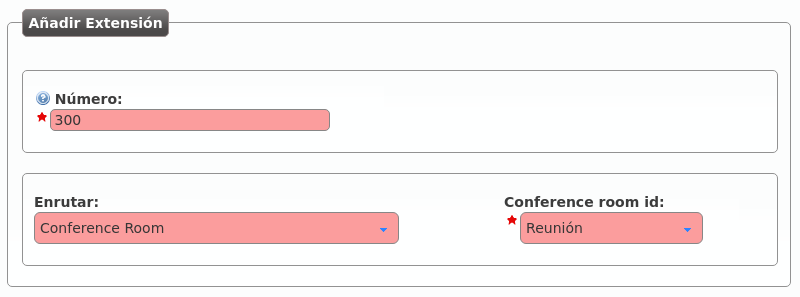In the following section we will see how to configure a external DDI to a conference room so it can be used by external callers.
Hint
There are other ways to make external callers join a conference room without using a DDI: it can be assigned to an Extension. This way, any user can transfer the call to the conference extension, or can be routed, for exmaple using an IVR entry.
External DDIs¶
In the previous section Configuring an external DDI we described in detail the required configuration for an external DDI routed to user. This section will go a bit further and explain the rest of configurable options of DDIs.

DDI routes¶
Once the call has passed all the checks in the filter (schedules and calendars) and after the welcome locution has been played (if there is any configured), we can route the call to the following processes:


Hint
We can also route the DDI to a Virtual Fax, but this is something we will explain in the following block.
Call pickup¶
Call pickup is the process where a user can answer a call that is being ringing in another terminal. No need to say that, somehow (sound, flashing lights, notification, etc) the users must know that the call is ringing elsewhere.
IvozProvider supports two kind of call pickups:
- Direct pickup
- In this type of pickup, the user that is trying to capture the ringing call must include the extension of the target phone after the service code. For example, if the direct pickup code is *95, the user must dial *95101 to capture a call that is ringing in the extension 101.
- Group pickup
- In this type of pickup, the user that is trying to capture the ringing call will just dial the service code. If anyone in any of the pickup groups of the user has a ringing call, it will be answered by the capturer.
Call pickup groups¶
In order to make call group pickups, the capturer user must be part of the same group that the target user that wants to capture.
The section Pickup groups allows the company administrator to configure what users will be in each group:
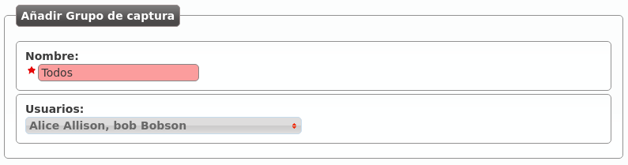As shown in the section Users configuration, we can add or edit the groups of a user in the user’s edit screen.
Note
A user can be part of multiple pickup groups. The system will take all of them into account when using the group pickup service.
Group pickup service code¶
IvozProvider supports 2 different configuration levels for defining the service codes for pickup:
- At brand level: Brand configuration > Services.
- At company level: Company configuration > Services.
The brand administrator can configure generic codes that all the companies will use. Companies can customize this codes if they are used to another ones.
The following section explains the services in depth, with all the additional services that can be accessed by dialing codes starting with *.
Additional services¶
There are special services that can be accessed by calling to some codes from the terminal.
Danger
Services defined in this section are not accessible during a conversation. They are activated by calling the codes, not using DTMF codes while talking.
Global Services codes¶
There are the folowing special services avaialble in the section Global configuration > Services:

- Direct pickup
- This service allows capturing a ringing call from another terminal by calling the code followed by the extension from the target user.
- Group pickup
- This service allows capturing a ringing call for any terminal whose user is part of one of the capturer pickup groups.
- Check voicemail
- This service allows checking the user’s voicemail using an interactive menu from which new voicemails can be listen, deleted, etc. This is an active alternative to receive voicemails via the email. Since 1.4, this service allows optional extension after the service code to check another users voicemails. Users can protect their voicemail using the internal menu options.
- Record locution
- This service allows any user to record their company’s locutions by dialing an special code. Voice instructions will be provided in the user’s language.
- Open Lock
- Calling this service code will set route lock status to ‘Opened’ (see Route locks).
- Close Lock
- Calling this service code will set route lock status to ‘Closed’ (see Route locks).
- Toggle Lock
- Calling this service code will change the current status of the lock (see Route locks).
As soon as new services are implemented into IvozProvider, they will be listed in this section.
Attention
This section lists the available services and the default codes when a new brand is created.
Hint
Changing the default code in this section will only affect new created brands.
Services and codes for Brands¶
The section Brand configuration > Services allows the brand operator to:
- Change the default service code for all the brand companies (assuming the company hasn’t already customized the code)
- Delete services so it won’t be available for the companies.
By default this list has all the services and codes from the global configuration:
Attention
This section lists the available services and the default codes when a new company is created.
Hint
Changing the default code in this section will only affect new created companies.
Services and codes for Companies¶
Each company can customize the default values assigned by the brand operator using the section Company configuration > Services and changing the codes listed there.
Company that wants to capture using ** instead of the default *95:

Hint
Services deleted by the company admin will not available to users.
Call recording¶
Attention
Beware that local legislation may enforce to announce that the call is being recorded (sometimes to both parties). You should include a recording disclaimer in your welcome locutions for DDIs with automatic recording enabled.
IvozProvider supports two different ways of recording calls:
- Automatic recordings for the incoming/outgoing calls that use a External DDI.
- On demand recordings requested by a user during a call.
Automatic DDI recordings¶
In this type of recording, the whole conversation will be recorded: from the start until it finishes.
Two different scenarios:
- Incoming calls to a DDI: The call will continue until the external dialer hangups (no matter whom is talking to).
- Outgoing calls using a DDI as Outgoing DDI: the recording will continue as long as the external destination keeps in the conversation.
Attention
Take into account that the call will be recorded while the external entity is present, even it the call is being transfered between multiple users of the platform.
Record all the calls of a DDI
To enable this feature, edit the DDI and configure the field under the section recording data:

There are 4 available options:
- Disable recordings
- Enable incoming recordings
- Enable outgoing recordings
- Enable all call recordings
On demand recordings¶
The on-demand recordings must be enabled by the brand administator for the companies that request it. This can be done in the companey edit screen:
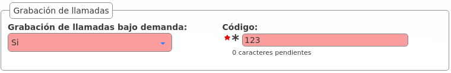Warning
Contrary to the Services mentioned in the previous section, the on demand record are actived within a conversation.
Contrary to automatic ones, on demand recording can be stoped using the same process that started them.
Activated using the Record key¶
Some terminals (for example, Yealink) support sending a SIP INFO message during the conversation with a special Record header (see reference). This is not a standard for the protocol, but being Yealink one of the supported manufacturers of the solution, we include this kind of on-demand recording.
Important
For this recording requests, the configured code doesn’t matter but the company still must have on demand records enabled.
To start or stop this kind of recordings, just press the Record key in the terminal and the system will handle the sent message.
Activated using DTMF codes¶
The more traditional approach for this feature is to press a combination of keys during the call. Some notification will be played and the recording will start or stop. This combination is sent to the system using DTMF tones using the same audio stream that the conversation (as mentioned in RFC 4733).
IvozProvider supports this kind of on demand record activation but with an important downside. In order to capture this codes, the pbx must process each audio packet to detect the code, avoiding the direct flow of media between the final endpoints.
Important
Enabling this record mode highly affects the performance of the platform. Use at your own risk.
Activated using a frustated blind transfer¶
There is a tricky way to access this feature for terminals that does not support the INFO message and don’t want its audio to be parsed:
Danger
This method is a workaround for those terminals that does not support the native Record key activation (recommended). Take into account that not all terminals will behave the same way while performing the transfer described in this section.
The keys for this methods are:
- It’s not activated using a code during the conversation.
- It’s activated making a blind transfer to the on demand record code.
- The system will understand this as a request to record and will reject the transfer.
- The user will continue with the existing call and keep talking.
Why this method does even exist?
The reason behind this tricky method is based, as explained in the previous block, on the design of the Platform general architecture and the RTP audio flow.
Recordings list¶
The company administrator can access to all the recordings in the section Company configuration > Recordings:

Recordings can be heard from the web or downloaded in MP3 format:

If the recording has been started on demand, it will also include the user that requested it:

Retail Clients¶
Retail clients are a special type of company that only provide a connectivity service with contract peerings through retail accounts.
Attention
Contrary to the Virtual PBX companies, all Retail clients use the brand domain to unequivocally identify their accounts. You’ll need to configure Brand’s domain to use this feature.
Hint
Retail clients can be enabled per Brand basis via Features.
The goal of this section will be describe each of the configuration settings associated with Retail clients included in IvozProvider.
Retail Accounts¶
Retail Accounts are the main routable option in Retail clients. More or less like Friends are to Virtual PBX Companies, accounts contain the required configurable options to provide a SIP connectivity service with IvozProvider and an external SIP entity.
Warning
Although both Contract peering and Retail accounts are defined by the brand operator, the first ones are designed to connect with the public network while the second ones connect the system with other SIP agents.
Types of retail accounts¶
There are 2 main types of SIP PBX that can use retail with IvozProvider:
- Direct connection PBX: IvozProvider must be able to talk SIP directly with this kind of accounts by just redirecting the traffic to the proper port of the public IP address of the PBX.
- PBX behind NAT: Not directly accesible. This kind of PBX must register at IvozProvider (just like all the Terminals do).
What kind of calls can be routed through a Retail Account?¶
Contrary to Friends, Retail Accounts have some simplifications and limitations.
- Retail Accounts only route their assigned DDIs
- Retail Accounts only place externals calls to Contract Peerings
- Retail Accounts only receive external calls from Contract Peerings
Retail Accounts Configuration¶
These are the configurable settings of Retail accounts:
- Name
- Name of the retail account. This name must be unique in the whole brand so it’s recommended to use some kind of secuential identifier. This will also be used in SIP messages (sent From User).
- Description
- Optional. Extra information for this retail account.
- Password
- When the retail account send requests, IvozProvider will authenticate it using this password. Like in other SIP agents in IvozProvider using password IS A MUST.
- Direct connection
- If you choose ‘Yes’ here, you’ll have to fill the protocol, address and port where this retail account can be contacted.
- Fallback Outgoing DDI
- External calls from this retail account will be presented with this DDI, unless the source presented matches a DDI belonging to the account.
- Country and Area code
- Used for number transformation from and to this retail account.
- Allowed codecs
- Like a other SIP entities, retail accounts will talk the selected codec.
- From domain
- Request from IvozProvider to this account will include this domain in the From header.
Voicemail service¶
Each retail account has a separate voicemail mailbox to forward received calls using Call Forward Settings below.
Important
They can use Voicemail service code defined at brand level to listen to messages and to record a greeting locution different from the standard one.
Call Forward Settings¶
Call forward settings can be configured per retail account. These are the fields and available values:
- Enabled
- Determines if the forward must be applied or not. This way, you can have most used call forward configured and toggle if they apply or not.
- Call Forward type
When this forward must be applied:
- Inconditional: always.
- No answer: when the call is not answered in X seconds.
- Busy: When the retail account is busy (486 response code).
- Not registered: when the retail account is not registered against IvozProvider.
- Target type
What route will use the forwarded call.
- Retail account voicemail
- Number (external)
Attention
Calls forwarded to an external number by a call forward setting will keep the original caller identification, adding the forwarding info in a SIP Diversion header.
Asterisk as an account client¶
At the other end of a account can be any kind of SIP entity. This section takes as example an Asterisk PBX system using SIP channel driver that wants to connect to IvozProvider.
Account register¶
If the system can not be directly access, Asterisk will have to register in the platform (like a terminal will do).
Configuration will be something like this:
register => account-name:account-password@ivozprovider-brand.sip-domain.com
Account peer¶
[name-peer]
type=peer
host=ivozprovider-brand.sip-domain.com
context=XXXXXX
disallow=all
allow=alaw
defaultuser=account-name
secret=account-password
fromdomain=ivozprovider-brand.sip-domain.com
insecure=port,invite
Warning
Account clients MUST NOT challenge IvozProvider. That’s why the insecure setting is used here.
Retail DDI filters¶
Retail External Filters can be assigned to DDIs to temporary forward calls to an external number.
Filters Configuration¶
This are the configurable settings of Retail external filters:
- Name
- Name of the filter.
- Number
- External Destination for this filter.
Attention
Calls forwarded by a filter will keep the original caller identification, adding the forwarding info in a SIP Diversion header.
Error
Retail DDI filters have precedence over retail account call forward settings (as they apply before).
Retail DDIs¶
DDIs are the external entry point from Contract Peerings to Retail Clients that can be routed through Retail Accounts.
DDI filters¶
We can assign an external call filter configured in previous section. Contrary to Virtual PBX External Call fiters, Retail DDIs filters only allow static redirection to another external number.
Retail DDI routes¶
Retail DDIs can only be routed to a Retail Accounts or Virtual Fax.
Hint
Routing a DDI through a Retail account will allow to place external calls from that account presenting that DDI as origin.
Recordings¶
If Retail Client has Recordings feature enabled, DDIs can also record incoming and/or outgoing calls.
Virtual Fax System¶
IvozProvider includes a simple but efficient faxing solution that allows:
- Sending PDF files via Fax.
- Receiving faxes through email or check them through the web portal.
Error
IvozProvider uses T.38 for both sending and receiving faxes. Brand Operator must use peering contracts that have support for it.
Creating a virtual fax¶
This is the interface that turns up when we create a new fax in section Company configuration > Virtual Faxes:

Fields are nearly self-explanatory:
- Name
- Used by remaining section to reference a fax
- Email address when we want to receive incoming faxes (if we check ‘Send by email’)
- Outbound DDI
- DDI used as source number for outgoing faxes
To receive faxes in this DDI, we need to point it to our new fax in the section DDIs:
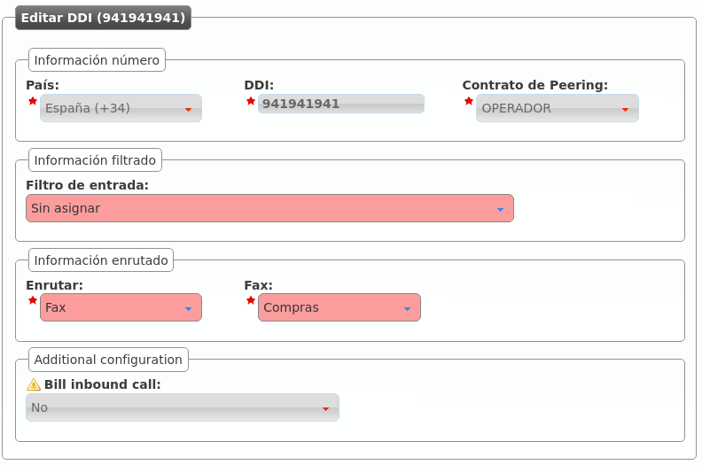Brand Operator can choose one or more Outgoing Routes for sending faxes:

This route applies to all faxes sent by selected company (or for all companies).
Note
load-balancing y failover logics described in previous sections apply to faxes too.
Important
If no fax-specific route is defined, faxes will be routed using standard call routes.
Sending a fax¶
Sending a fax is an easy task. First, we upload de PDF file and set the destination:

The list shows the fax and its status:

Incoming faxes display¶
Apart from being received by mail, faxes can be watched and downloaded within the web portal too:

Billing and Invoices¶
This block is essential for brand administrators as we will explain how to:
- Create pricing plans to assign a price to calls made by final users.
- Create invoices that show call details and global costs of each of their companies.
We will cover this topics:
Call Registry¶
Call Registry section shows the calls of the whole telephony platform and it is present in three different levels:
- Main management > Call Registry
- Brand configuration > Call Registry
- Company configuration > Call Registry
Each section filters calls conveniently.
Main management (god)
Lists all the calls of the platform, showing which brand and company they belong to:
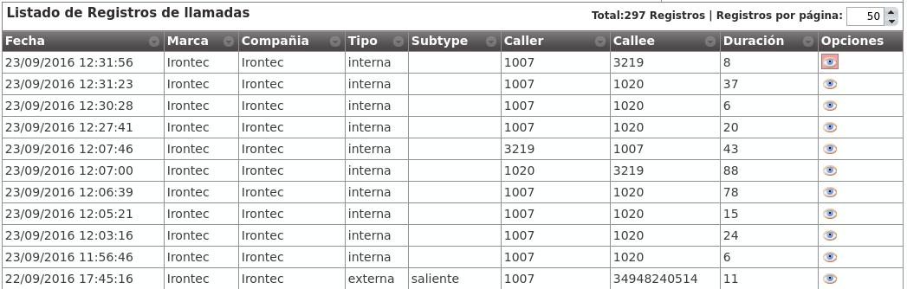Brand level
Lists all the calls of the currently emulated brand, showing which company they belong to:
Company level
Lists all the calls of the currently emulated company:

Note
CSV export makes possible to download the list for its later analysis.
Hint
If you choose one specific call, additional information is shown. This additional information is dependant of the current level (god, brand or company) and shows details about call transfers, call forwards, etc.
Billable calls¶
Billable calls sections only list calls that imply cost.
Important
Call Registry sections, on the other hand, show all calls, even the ones that do not imply cost, such as internal calls, incoming calls, etc.
These lists therefore include the price of each call (once it is calculated). Since companies are notified about its call’s price via invoices issued by brand operator, this section is only available at two levels:
- Main level (god level)
- Brand level
Each entry shows this information:
- Date
- Date and time of the call establishment.
- Brand
- Only visible for god, shows the brand of each call.
- Company
- Visible for god and brand operator, show the company of each call.
- Destination
- External number dialed.
- Pricing pattern
- Shows the pricing pattern used to set the price.
- Duration
- Shows how long the call lasted.
- Metered (yes/no)
- Shows if the asynchronous task that sets the price of each call has parsed each call.
- Price
- The cost of the call.
- Pricing plan
- Shows the Pricing plan used to set the price.
- Peering contract
- Shows which Peering contract was used for each call.
- Invoice
- Show if a call is already included in any invoice.
- Type (inbound/outbound)
- Since some incoming calls can imply cost (see billing of inbound calls), show if the call is an incoming call or an outgoung one.
Note
As soon as the call is hung up, they appear in this list. In some minutes time the asynchronous process will set Metered to ‘yes’ and will assign a price.
Pricing plans¶
In No pricing plan, no call section the process of creating a pricing plan was described quite thoroughly and main concepts were introduced:
A pricing plan groups some pricing patterns (prefixes) with their cost details:
- Cost per minute
- Call establishment cost
- Bill by seconds, by minutes, etc.
A pricing plan is linked to an specific company with a period of time in which this asociation is valid.
One company may have more than one valid pricing plan for an specific call in an specific moment.
In such cases, the call price will be calculated using the price detail of the matching pricing plan with minor metric.
Manual creation¶
Manual creation of a pricing plan implied the previous creation of at least one price pattern.
At this point, the future brand operator may have noticed that creating thousands of pricing patterns would be a really annoying and time consuming task, as there are 254 countries, each of them with their mobile networks, landline networks, special service numbers, etc.
That’s why the creation of pricing patterns and pricing plans is done using a CSV file.
Importing a CSV file¶
The first step is creating an empty pricing plan to import the prices in (section Brand configuration > Pricing plans):

We enter the empty pricing plan we have just created:

This is the key button for the massive pricing pattern import process:

Once chosen the CSV file to import, this window turns up:

We can select which column contains which field, in case we want to import a CSV file in a non-recommended format. We can also decide whether to import the first line or discard it as it may have titles instead of data.
Hint
The importing process is done in background, letting the brand operator continue doing other stuff while it is finished.
CSV format¶
Although the above window allowed importing non-recommended format CSV files, we encourage you to import a file in the proposed format, as it will make this process much easier.
The recommended CSV format is described in the contextual help section, that includes even a link to download an example file:

The order of the columns should be:
- Pricing pattern name
- Pricing pattern description
- Prefix
- Price per minute
- Establishment cost
- Billing period
Note
It is recommended to double quote alphanumeric entries, though it is not compulsory for single word entries (or entries without odd symbols). If they contain any comma, they MUST be quoted.
Error
Floating numbers MUST use point as decimal separator.
Note
Numeric entries can be quoted with double quotes, but it is not mandatory.
Important
The importing system will just bind the price to an existing price pattern or, if prefix doesn’t match any existing pricing pattern, it will create one.
Warning
The price of the call will be increased every billing period unit.
- If billing period is set to 1, every second the price will be increased price per minute divided by 60 (bill by seconds).
- If billing period is set to 60, every minute the price will be increased price per minute (bill by minutes).
Once the import process is over, we just have to bind the pricing plan to the companies we want following the procedure explained in the previous block.
Call billing¶
Billing a call is the action of setting a price to a call that implies cost.
Automatic billing¶
As exposed previously, billing calls depends upon an automatic process:
When a call is about to be established, IvozProvider verifies that it will be able to bill it.
- If with the current configuration (active and applicable pricing plans for a given company and for the specific destination) it won’t be possible to bill the call, IvozProvider will prevent its establishment.
Once a call that implies cost is hung up, it is listed in Billable calls.
Some minutes later, the billing task will evaluate each unbilled call and will update this fields:
- Price
- Pricing plan
- Pricing pattern
- Set Metered to ‘yes’
Manual re-billing¶
It may happen that the brand operator needs to re-bill an specific call due to multiple reasons:
- Mistake on imported pricing plan/pattern.
- Multiple pricing plans with incorrect metric value.
- Not asociated pricing plan.
- Etc.
In these cases, the brand operator can re-bill wrongly billed calls.
Important
Billing a call again means setting the price as it is made right now. It uses, therefore, the current configuration of pricing plans not the configuration of the moment the call was made.
In order to re-bill some calls (or just one), select them in Brand configuration > Billable calls and press the button Bill calls.

Error
It is not possible to re-bill a call that is currently included in an existing invoice. In other words, if a selected call has a non-empty Invoice field, this invoice must be deleted before. The reason behind this logic is that we don’t want and invoice containing calls with a wrong price.
Invoice generation¶
The final goal of this section is to generate invoices with the call that imply cost of a given company.
Invoice templates¶
Before generating an example invoice, it is important to understand that invoice creation process uses templates.
Hint
This way, every brand operator can adapt which information is shown and how this information is shown, add logos, graphs, etc..
Templates are parsed by handlebars and rendered using wkhtmltopdf library.
The helper in the section Brand configuration > Invoice templates include a summarized explanation of the creation of templates. In the official site of wkhtmltopdf there is plenty additional information. You can delve into template expressions here as well.
By default, this section provides some basic example templates:

Fixed costs¶
Fixed cost are a constant concept that can be added to invoices that use invoice templates that take into account these fixed costs.
Take this image as an example (section Fixed costs):

We will explain afterwords how these fixed costs can be added to a invoice and in what amount.
Invoice creation¶
Invoices section lets brand operator to generate invoices to issue to its clients.
This is the process to add a create a new invoice:

- Number
- Will be included in the invoice and shows the invoice number
- Company
- The company whose calls will be invoiced
- Start/End date
- The time period of the calls that will be invoiced
- Taxes
- Taxes to add to the final cost (e.g. VAT)
- Template
- Invoice template that will be used
Let’s add some fixed costs to this invoice:

Select previously defined fixed costs and their amounts:

At this point, we can generate the invoice pressing this button:

Pressing this button we can see which calls have been included in the invoice:

And pressing this one we can download the invoice in PDF format:

Warning
End date must be a past date. In other words, it is not allowed to generate invoices for future dates o dates including today.
Error
All the calls of the selected period must be billed.
Terminal provisioning¶
Overview¶
IvozProvider supports provisioning of terminals via HTTP/HTTPS that fulfill the following requirements:
Assuming a just unboxed terminal, just plugged and connected to the network:
- Ask IP address via DHCP.
- DCHP has enabled the option 66 that points to the platform portal
- The first requested provisioning file is a static file (different for each model) prefixed with the previous step URL.
- The served file can redefine the URL for further requests
Any terminal model that can adapt to this provisioning way can be added into the section Platform Configuration > Terminal manufacturers.
Example Cisco SPA504G
Cisco SPA504G is turned on and requests an IP address to DHCP
Receives “http://provision.example.com/provision” as DHCP option 66
Request HTTP configuration from http://provision.example.com/provision/spa504g.cfg
All 504G request the same file (spa504.cfg), prefixed with the given URL
This file only contain basic configuration settings for the model and the URL for the next request (p.e. https://provision.example.com/provision/$MAC.cfg)
This way, each terminal (MAC should be unique) request a specific file (and different) after the generic one has been served.
This file will contain the specific configuration for the terminal:
- User
- Password
- SIP Domain
Note
IvozProvider provisioning system, right now, only has one goal: provide credentials and language settings for the terminals.
Configuration of supported models¶
IvozProvider uses a template system that allows global operator (God) to define new models and configure what files will be served.
The help section of Terminal manufacturers has examples for some models that work (in the moment of writting this) with IvozProvider provisioning system.
Hint
These models will be available after the initial installation, but you must edit them and load the default configuration before you can use the provisioning system (option Restore default template).
Error
UACs firmware changes may cause that given examples stop working. We will try to keep templates updated, but we can’t guarantee this point.
Analyzing the suggested templates you can have a basic idea of the flexibility of the system to configure any existing terminal model in the market and to adapt them to eventual changes in given examples.
Getting technical¶
Imagine an environment with this configuration:
- Provisioning URLs:
- Generic file: http://PROV_IP/provision
- Specific file: https://PROV_IP:PROV_PORT/provision
- TerminalModels.genericUrlPattern: y000000000044.cfg
Which requested URLs will be valid?
For generic file, just one: http://PROV_IP/provision/y000000000044.cfg
For specific file, requests are right as long as this rules are fulfilled:
- All HTTP requests are wrong.
- HTTPS requests to 443 are wrong (PROV_PORT must be used).
- Subpaths after provisioning URL are ignored, both in request and in specificUrlPattern.
- On specific file request, extension must match as long as extension is used in specificUrlPattern.
- On specific file request, the filename must match exactly once {mac} is replaced.
- MAC address is case insensitive and can contain colons or not (‘:’).
Let’s analyze the examples below to understand this rules better:
Example 1 - TerminalModels.specificUrlPattern: {mac}.cfg
Working requests:
https://PROV_IP:PROV_PORT/provision/aabbccddeeff.cfg
https://PROV_IP:PROV_PORT/provision/aa:bb:cc:dd:ee:ff.cfg
https://PROV_IP:PROV_PORT/provision/aabbccdd:ee:ff.cfg
https://PROV_IP:PROV_PORT/provision/aabbccddeeff.cfg
https://PROV_IP:PROV_PORT/provision/AABBCCDDEEFF.cfg
https://PROV_IP:PROV_PORT/provision/subpath1/aabbccddeeff.cfg
https://PROV_IP:PROV_PORT/provision/subpath1/subpath2/aabbccddeeff.cfg
Wrong requests:
https://PROV_IP:PROV_PORT/provision/aabbccddeeff.boot
https://PROV_IP:PROV_PORT/provision/subpath1/subpath2/aabbccddeeff.boot
This example is identical to ‘t23/{mac}.cfg’, as subpaths are ignored.
Example 2 - TerminalModels.specificUrlPattern: {mac}
All previous examples are ok, as extension is ignored if no extension is found in specificUrlPattern.
This example is identical to ‘t23/{mac}’, as subpaths are ignored.
Example 3 - TerminalModels.specificUrlPattern: yea-{mac}.cfg
All previous examples are wrong, as no ‘yea-‘ is found (‘yea’ match is case sensitive).
Working requests:
https://PROV_IP:PROV_PORT/provision/subpath1/yea-aabbccdd:ee:ff.cfg
Wrong requests:
https://PROV_IP:PROV_PORT/provision/subpath1/yea-aabbccdd:ee:ff.boot
https://PROV_IP:PROV_PORT/provision/subpath1/YEA-aabbccdd:ee:ff.cfg
This example is identical to ‘t23/yea-{mac}.cfg’, as subpaths are ignored.
Example 4 - TerminalModels.specificUrlPattern: yea-{mac}
As no extension is given:
https://PROV_IP:PROV_PORT/provision/subpath1/yea-aabbccdd:ee:ff.cfg
https://PROV_IP:PROV_PORT/provision/subpath1/yea-aabbccdd:ee:ff.boot
Wrong requests:
https://PROV_IP:PROV_PORT/provision/subpath1/YEA-aabbccdd:ee:ff.cfg
This example is identical to ‘t23/yea-{mac}’, as subpaths are ignored.
User Portal¶
IvozProvider provides a web portal where final users can do the following actions:
See all calls he or she has been involved.
Configure call forwards:
- To voicemail
- To an internal extension
- To an external number
Enable functionalities:
- Call waiting
- Do Not Disturb
See the state of his or her SIP device registration
Access URLs¶
Prior to accessing to user portal, the URL addresses must be configured (domains in these URLs must point to any of the public IP addresses of the platform).
2 roles can perform this task:
God operator¶
In the section Platform configuration > Brands you can configure as many user URLs as you wish, using the button Portal list of each brand.
Note
URLs are linked to brands and god operator may choose where to create one shared user portal URL for all the companies of a brand or creating one per company.
Warning
URLs MUST be HTTPS.
This section also allows setting a logo per URL, a theme and a phrase to use as the title of user portal.
Hint
This allows creating corporative user portals.
Brand Operator¶
Brand Operator can also perform this same task in order to configure the user portal URLs of his companies.
This way, he can choose whether to configure one URL per Company (with custom domains, logos, theme and title) or sharing a global URL for all of them.
The section to do this is Brand configuration > Portal URLs.
Access credentials¶
Access credentials to user portal is configured in Company configuration > Users section.
Specifically:
- Login information block, the access of each user is enabled or disabled.
- You can set the Password too.
- To log in the user portal, the user must use his/her email address.
Warning
The email of each user MUST be globally unique.
Security elements¶
Firewall¶
IvozProvider does not currently include a firewall but...
Danger
We strongly encourage any production installation to implement a firewall to protect the platform from the wild Internet.
The protection method could be:
- Local firewall based on iptables
- External firewall
- Both
Exposed ports/services¶
These are the ports IvozProvider needs to expose to work properly:
SIP signalling:
- Port 5060 (TCP/UDP)
- Port 5061 (TCP)
- Port 7060 (TCP/UDP) y 7061 TCP (just in case both ProxyUsers and ProxyTrunks share IP)
RTP audioflow:
- Port range 13000-19000 UDP
Web portal and provisioning:
- Ports TCP 443, 1443 y 2443
Hint
We recommend using iptables geoIP module to drop connections from countries where we don’t have any users.
Authorized company IP ranges¶
During the Company creating process, we skipped the security mechanism that limits the IP addresses or ranges that the company terminals can use in their terminals.
This can be activated in the section Brand configuration > Company:

Rest of the users won’t be allowed to connect from another network, even if the credentials are valid.
Warning
Once the filter has been activated you MUST add networks or valid IP addresses, otherwise, all the calls will be rejected.
Both IP addresses or ranges can be used, in CIDR format (IP/mask):
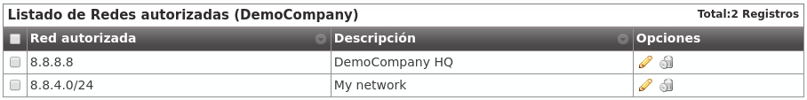Important
This mechanism limits the origin of the users of a company, it doesn’t filter origin from Contract Peerings.
Roadwarrior users¶
Some companies have roadwarrior users that travel often and connect from external networks, forcing Companies to disable the IP filter security mechanism.
To solve this issue, there is a user option called Calls for non-granted IPs that enables these users to call from non-granted IPs while their companies are still protected with IP filter mechanism.
When users like theese call from non-granted IPs, their amount of concurrent outgoing calls are limited to 1, 2 or 3 to avoid being a security breach.
Warning
Only calls generated by this kind of user (both internals and externals) are counted and limited, received calls are not affected by this setting (they are controlled with MaxCalls setting).
To sum up, with this feature:
- There are users that are allowed to make a fixed amount of calls from non-granted IPs.
- This calls from non-granted IPs are counted and limited.
Example 1 - Company without IP check
It doesn’t matter if the user is allowed to make calls from non-granted IPs, as there are no non-granted IPs.
Example 2 - Company with IP check
- If the user is calling from one of the allowed IPs, it doesn’t matter if the user is allowed to make calls from non-granted IPs: this calls are not counted nor limited.
- If the user is NOT calling from one of the allowed IPs, it is verified the amount of calls that this user is allowed to make. If the user is allowed to make calls from non-granted IPs and has not exceeded his limit, the call is granted and counted.
Note
If Calls for non-granted IPs is set to None the user must fulfill the IP policy of his company.
Anti-flooding¶
IvozProvider comes with an anti-flooding mechanism to avoid that a single sender can deny the platform service by sending lots of requests. Both proxies (users and trunks) use this mechanism, that limits the number of requests from an origin address in a time lapse.
Warning
When an origin reaches this limit, the proxy will stop sending responses for a period of time. After this time, the requests will be again handled normally.
Some origins are automatically excluded from this anti-flooding mechanism:
- Application Servers from the platform.
- Company authorized IP addresses or ranges (see previous section).
Global operator of the platform can also add exceptions to this mechanism in the section Global configuration > Antiflood trusted IPs.

Concurrent call limit¶
This mechanism limits the number of concurrent external calls for a company/retail account. It can also be configured at brand level.
Warning
Brand and company/retail limits are not related anyhow. The one that is reached first will prevent new calls.
Tip
To disable this mechanism, set its value to 0.
Maintenance and troubleshooting¶
This section described the tools included in IvozProvider to troubleshot any problems you may have:
Analyzing SIP traffic¶
Although all production IvozProvider installations mantained by Irontec include a Homer SIP Capture Server, it is not installed in the standlone version of IvozProvider. The reason behind this is that we prefer awesome SIPCAPTURE stack running on an additional machine.
sngrep Ncurses SIP Messages flow viewer developed by Irontec is currently the preferred tool to inspect SIP traffic included in IvozProvider.

sngrep¶
See live SIP traffic (all):
sngrep
See live SIP traffic related to calls:
sngrep -c
See live SIP traffic and capture RTP too:
sngrep -c -r
For more reference, visit sngrep official site.
Log viewer¶
Although all production IvozProvider installations mantained by Irontec include a Graylog server, journalctl is currently the unique tool to inspect logs generated by different elements of the solution in the past.
Asterisk CLI¶
Asterisk CLI gives tons of realtime information too and are formatted beautifully to detect possible configuration errors:

You can access Asterisk CLI typing ast in the shell.
Kamailio realtime log viewing¶
You can see Kamailio logs in realtime too typing kamtail-proxyusers and kamtail-proxytrunks in the shell: